데이 트레이딩이 뭐고, 무엇이 오해일까요
강사가 말하는 데이 트레이딩은 단순해요. 주식이나 코인, 선물을 사서 같은 날 안에 파는 거예요. 부모 세대가 말하던 "사서 30~40년 들고 가는" 투자와는 달라요. 값이 100달러에서 101달러로 움직이는 작은 변화로도 수익을 낼 수 있어요. 값이 떨어질 때도 매도(숏)로 돈을 벌 수 있다는 점도 다르다고 해요.
강사가 바로잡는 여섯 가지 오해
본론에 들어가기 전에 강사는 초보가 흔히 믿는 이야기를 하나씩 반박해요. 슬라이드마다 빨간 "WRONG" 띠와 그 아래 "THE TRUTH" 상자가 붙어 있어요.
| 오해 | 강사의 반박 |
|---|---|
| 진짜 직업이 아니다 | 은행, 헤지펀드, 프랍펌에는 매일 트레이딩만 하는 팀이 있어요. |
| 도박과 같다 | 검증한 전략과 위험 관리가 있으면 카지노 손님이 아니라 카지노 주인 쪽에 서요. |
| 실제로는 돈을 못 번다 | 벌 수 있지만, 못 버는 사람은 대개 전략이 없거나, 레버리지를 과하게 쓰거나, 너무 일찍 그만둬요. |
| 수만 달러가 있어야 시작한다 | 프랍펌 자금으로 거래하고 수익의 80~90%를 가져갈 수 있어요. |
| 하루 종일 차트를 봐야 한다 | 전략이 정해지면 하루 30~45분이면 돼요. |
| 금방 부자가 된다 | 기술이라 시간이 걸려요. 강사 본인은 3년 넘게 걸렸어요. |
도박 이야기에서는 조건을 하나 달아요. 아래 그림처럼 "검증한 체계 없는 매매 = 순수한 도박"이라는 거예요. 아무 데서나 사고파는 초보의 매매는 도박이 맞다고 인정해요. 그래서 이 강의는 체계를 먼저 만들고 그다음에 매매하는 순서로 짜여 있어요.
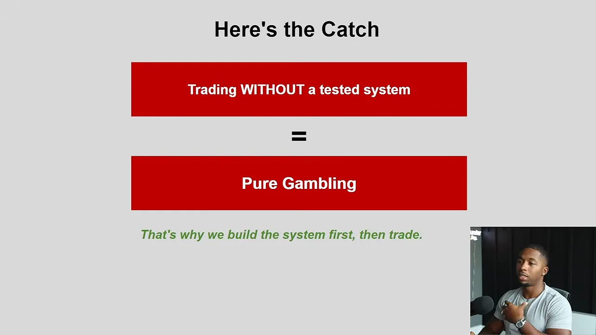
하루 30~45분은 이렇게 써요
강사가 매일 아침 똑같이 반복한다는 일과예요. 초록 칸의 시간을 더하면 35~45분이 나와요. 핵심은 네 번째 줄이에요. 알림을 걸어 두고 진입한 뒤에는 자리를 떠요. 진입 후에도 화면을 지켜보는 시간은 이 표에 없어요.
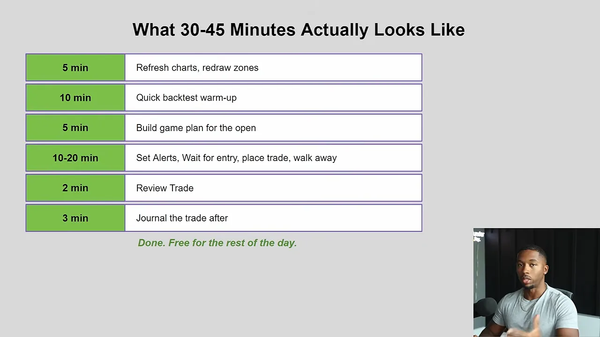
현실적인 기대치
강사는 개인 코칭을 할 때 쓰는 일정표를 보여 줘요. 회색 칸 두 개는 아직 실전 돈을 쓰지 않는 단계이고, 초록 칸부터 실제 수익이 나기 시작해요. 첫 1~2달은 모의 계좌로 차트, 캔들, 전략을 배우면서 "길을 잃은 느낌"이 드는 게 정상이라고 해요. 2~3달째에는 수백 번 연습 매매로 강점을 만들어요. 3~12달 사이에 작은 실전 매매와 프랍펌 평가, 첫 출금이 나온다고 봐요.
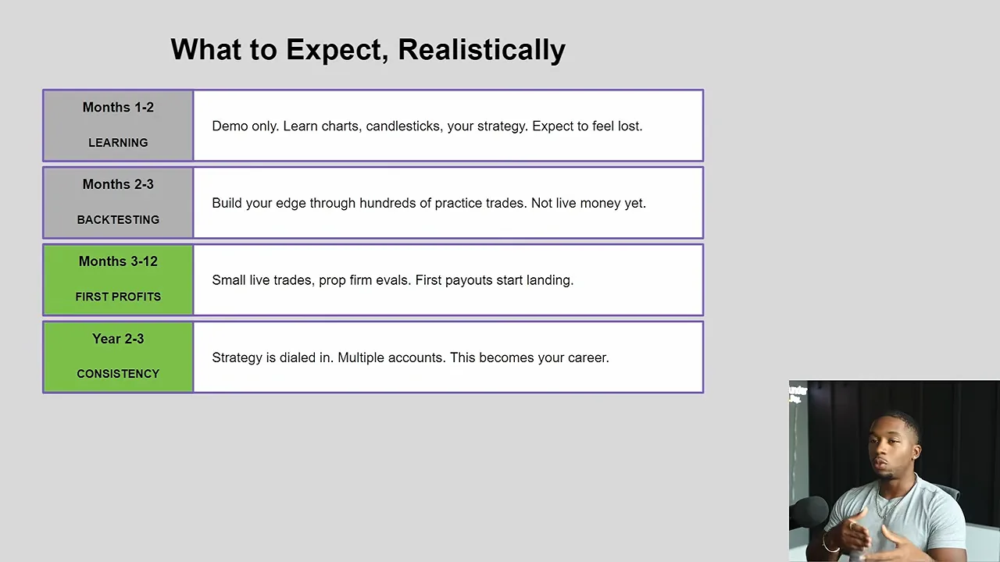
장비 걱정도 덜어 줘요. 최근 5년 안에 나온 노트북, 화면 하나, 안정적인 인터넷이면 충분해요. 익숙해지면 휴대폰으로도 거래할 수 있지만, 배울 때는 큰 화면을 권해요.
왜 선물이고, 계약은 어떻게 계산할까요
거래할 수 있는 시장은 다섯 가지예요. 선물, 외환(FX(Foreign Exchange)), 주식, 옵션, 코인이에요. 강사는 코인으로 시작해 외환을 5년쯤 하고 주식과 옵션을 거쳐 지금은 선물만 한다고 해요. 슬라이드에서 맨 왼쪽 선물 칸에만 초록 테두리와 "THIS IS US"가 붙어 있어요.
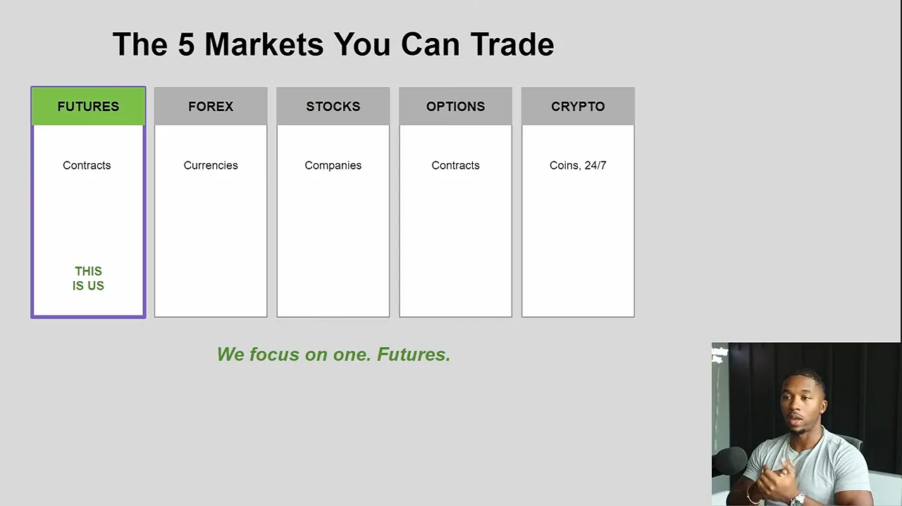
외환은 두 통화의 교환 비율을 거래하는 거예요. 강사는 두바이에서 1달러가 3.67디르함이었다가 3.61디르함이 되는 변동을 예로 들어요. 2019~2020년 무렵 쇼핑몰에서 사람을 끌어들이던 외환 다단계와는 다르다고 선을 그어요. 옵션은 아주 단순히 말하면 주식에 레버리지를 얹은 형태라고 소개해요.
왜 선물일까요
강사가 선물을 고른 이유는 슬라이드의 네 줄이에요. 짧은 움직임을 잡기에 좋고, 가격 움직임이 깨끗하고, 레버리지를 쓸 수 있고, 프랍펌이 선물 트레이더에게 주로 자금을 대 준다는 거예요. 두 번째 줄은 규제와 관련 있어요. 강사는 외환 브로커 중에는 고객이 지게 만들어 돈을 버는 곳이 있지만, 선물은 규제를 받아 그럴 수 없다고 말해요.
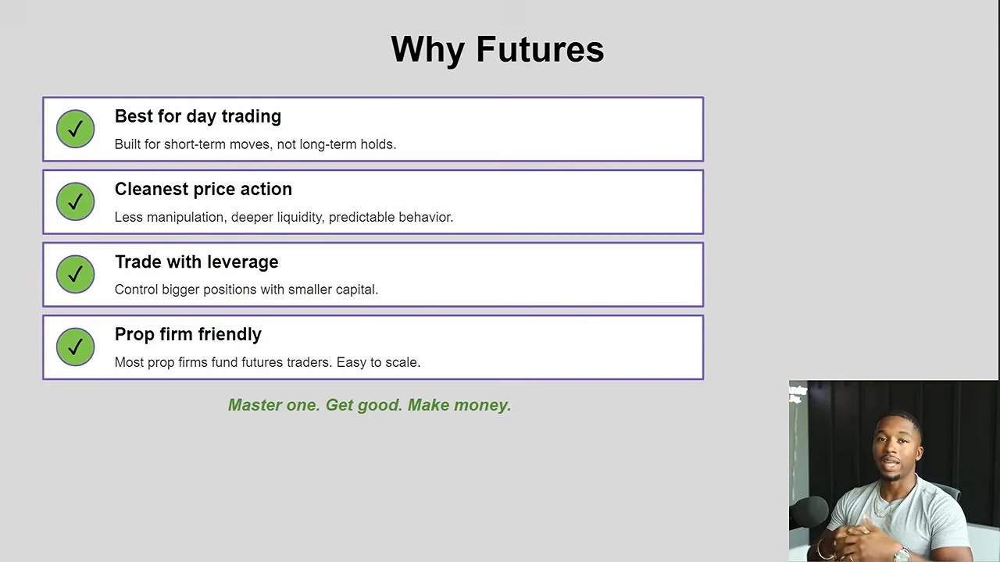
주요 종목 네 가지
선물로는 주가지수, 원유, 천연가스, 옥수수까지 거래할 수 있지만, 강사는 네 종목만 알면 된다고 해요. 왼쪽 위부터 ES(S&P 500, 유동성이 가장 큼), NQ(나스닥 100, 기술주 중심이라 변동이 큼), YM(다우존스 30종목, 느리고 부드러움), GC(금, 세계 뉴스와 공포에 반응)예요. 각 칸의 짧은 설명이 종목의 "성격"이에요.
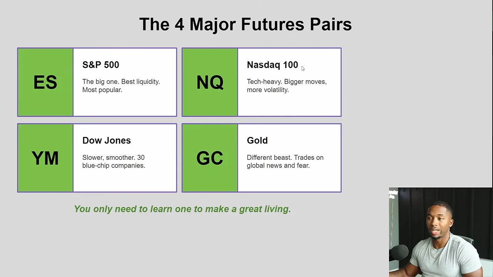
강사 본인은 YM을 가장 좋아하고 NQ와 ES도 가끔 해요. 금은 거래를 시작한 첫 몇 주 만에 6만 달러를 잃게 한 종목이라 지금은 손대지 않는다고 해요.
계약 크기, 증거금, 틱
선물 계약은 정해진 가격에 사거나 팔기로 한 법적 계약이에요. 강사는 자기 얼굴 모양 인형을 예로 들어요. 2년 뒤에도 100달러에 살 수 있는 계약이 있다면, 인형 값이 10만 달러로 오를수록 그 계약 자체의 가치가 커진다는 거예요. 실제 매매에서는 물건을 받지 않고 계약만 사고팔아요.
아래 표가 이 장에서 가장 중요한 화면이에요. 강사도 "캡처해 두고 계속 보라"고 해요. 증거금 열은 계약 하나를 열기 위해 계좌에 있어야 하는 돈이에요. 틱 크기 열은 가격이 움직이는 최소 단위이고, 틱 가치 열은 한 틱 움직일 때 계약 하나당 오가는 돈이에요. M으로 시작하는 마이크로 종목은 증거금과 틱 가치가 모두 원래 종목의 1/10이에요.
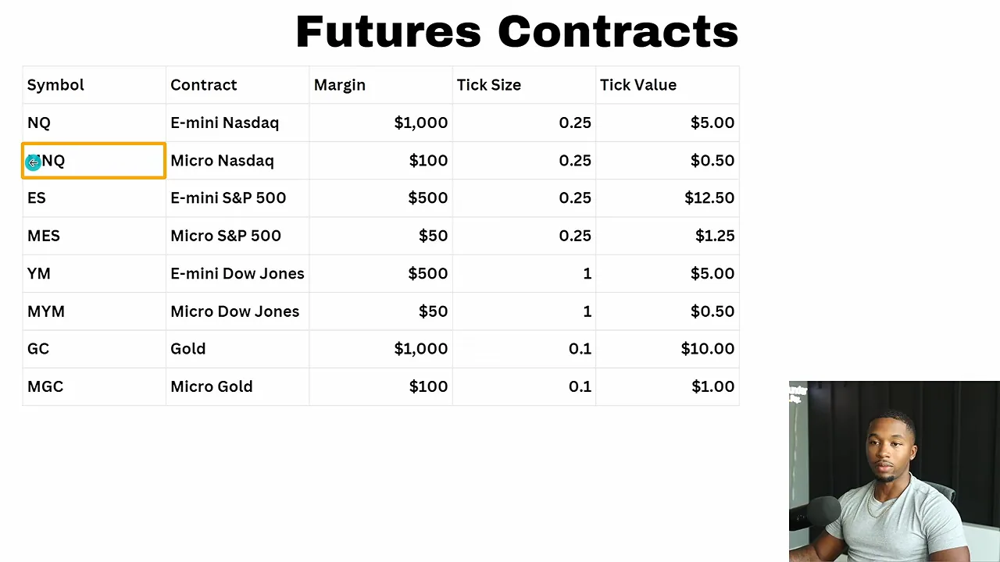
증거금은 잃는 돈이 아니에요. NQ 1계약을 열 때 계좌에 1,000달러가 있어야 한다는 뜻일 뿐이에요. MES(Micro E-mini S&P 500 futures)나 MYM(Micro E-mini Dow futures)이면 50달러로도 1계약을 열 수 있어서, 강사는 50달러로 시작할 수 있다고 말해요. 이 금액은 브로커마다 다르다고 덧붙여요.
틱 계산은 강사가 든 NQ 예로 보면 쉬워요. NQ는 0.25씩 움직이고 한 틱이 5달러예요. 가격이 10.00에서 11.00으로 오르면 0.25짜리 칸을 네 번 지나니 4틱, 즉 20달러예요. 100틱 이익이면 500달러예요.
계약을 10개 열면 틱 크기는 그대로 0.25이고 틱 가치만 50달러가 돼요. 5계약이면 한 틱에 25달러예요. 이 계산이 나중에 "한 번에 얼마를 걸지" 정하는 바탕이 돼요.
매수는 롱, 매도는 숏이라고 불러요. 롱은 가격이 오를수록, 숏은 가격이 내릴수록 돈을 벌어요.
언제 거래하고 무엇을 확인할까요
시장을 움직이는 건 개인이 아니라 은행과 헤지펀드 같은 기관이에요. 강사는 자기가 NQ를 10계약 사도 시장은 꿈쩍하지 않는다고 말해요. 기관도 사람처럼 정해진 시간에 일하니, 그 사람들이 일하는 시간에 가격이 크게 움직여요. 이 시간대를 거래 세션이라고 불러요.
세 세션과 겹치는 시간
슬라이드는 처음에 런던 세션을 새벽 3시~오전 8시로 적었다가, 강사가 말하면서 바로 고쳐요. 고친 화면이 아래예요. 아시아 칸만 회색이고 "느리고 좁다, 건너뛰라"고 적혀 있어요. 런던과 뉴욕 칸에는 "TRADE THIS"가 붙어 있어요. 시간은 모두 미국 동부 시간이에요.
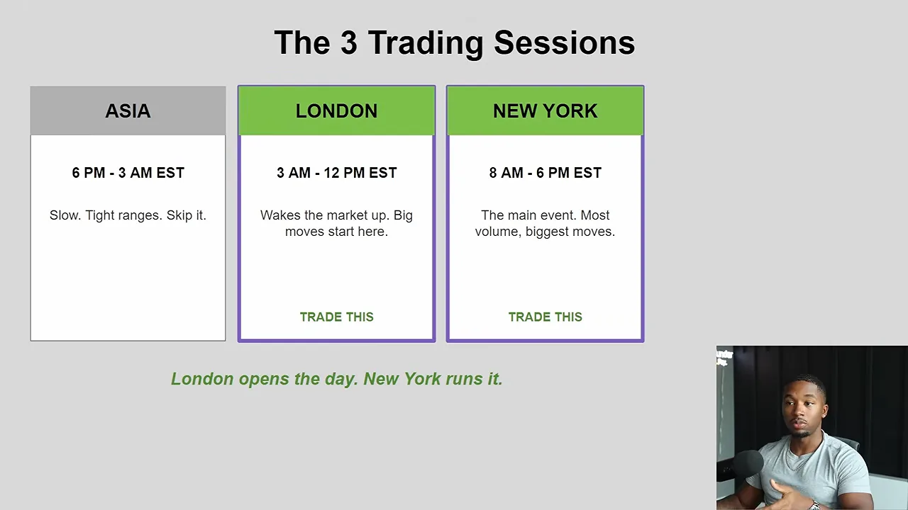
세 칸을 하루 24시간 위에 올려 보면 겹치는 시간이 한눈에 보여요. 런던과 뉴욕이 함께 일하는 오전 8시~낮 12시에 거래량과 움직임이 가장 커요. 그 안에서도 미국 주식시장이 열리는 오전 9시 30분에 거래량이 확 늘어나요. 강사는 이 시간에 들어가서 첫 30~45분 안에 하루 매매를 끝내는 걸 좋아해요.
세션마다 잘 맞는 종목도 달라요. 런던 시간에는 금이 거래량도 많고 움직임도 깨끗해요. 뉴욕 시간에는 NQ, ES, YM이 하루 중 가장 크게 움직여요. 강사는 금에서 크게 잃은 뒤로 금은 하지 않지만, 최근 런던 시간의 금은 잘 움직인다고 인정해요.
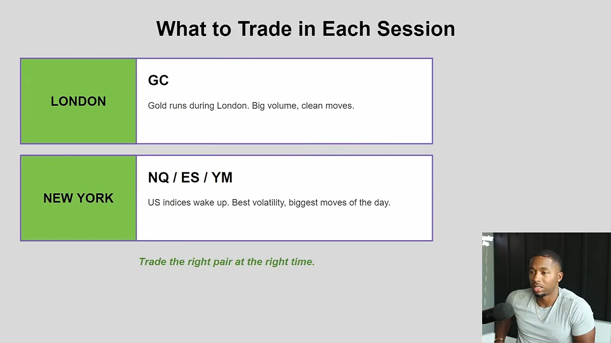
펀더멘털과 기술적 분석
시장을 읽는 방법은 두 가지예요. 왼쪽 칸 펀더멘털 분석은 경제, 수급, 뉴스, 실적으로 무엇을 거래할지와 왜 움직이는지를 봐요. 오른쪽 칸 기술적 분석은 차트의 가격대, 패턴, 지표, 캔들로 언제 들어가고 나올지를 정해요. 슬라이드 아래쪽에 각각 "긴 관점"과 "짧은 실행"이 적혀 있어요.
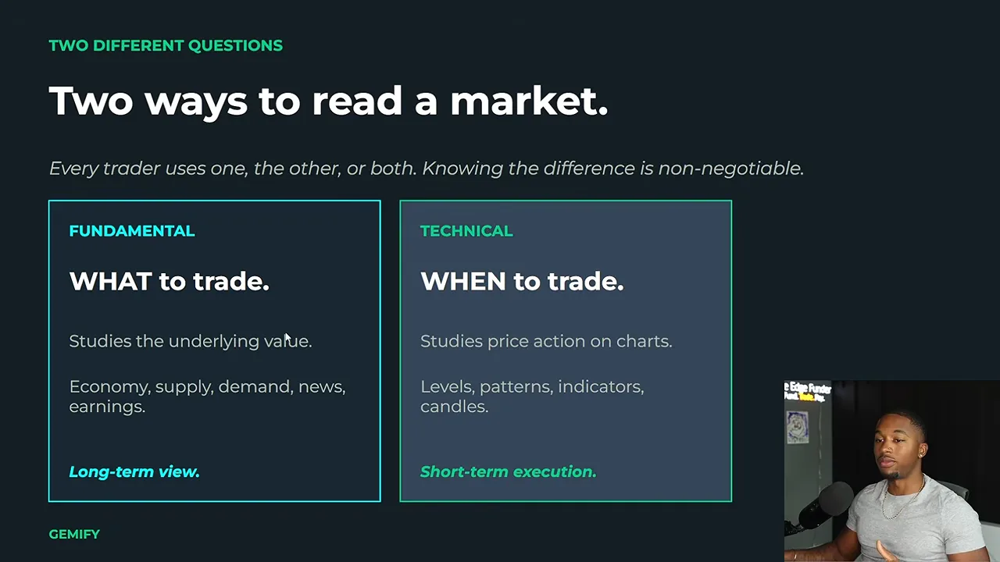
강사의 결론은 "매매는 기술적 분석이 이끌고, 펀더멘털은 경계심을 준다"예요. 아래 화면은 이 둘이 하루에 어떻게 나란히 돌아가는지 보여 줘요. 왼쪽 트랙은 달력 확인으로, 오늘 경제 발표가 있는지, CPI(Consumer Price Index)나 FOMC(Federal Open Market Committee) 같은 큰 일정이 언제인지 봐요. 이걸로 그날의 위험을 정해요. 오른쪽 트랙은 차트 읽기로, 추세 방향과 주요 가격대, 셋업, 진입·손절·목표를 봐요. 실제 매매는 이쪽에서 시작돼요.
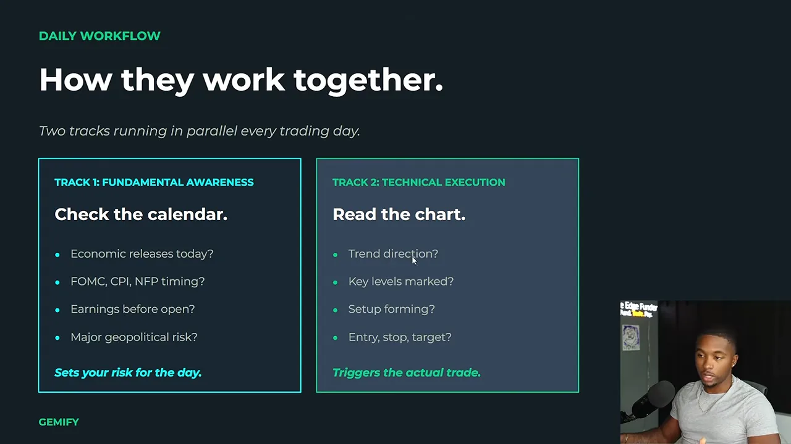
매일 아침 뉴스 일정 확인
예정된 경제 발표는 forexfactory.com 일정표에서 봐요. 화면에는 날짜별로 시간, 통화, 영향도 폴더, 발표 이름, 예상치와 이전치가 줄지어 있어요. 강사가 보는 건 두 칸뿐이에요. 통화가 USD(United States Dollar)인지, 폴더가 빨간색인지예요. 노란 폴더는 거의 영향이 없고, 주황 폴더는 조금, 빨간 폴더는 크게 움직여요.
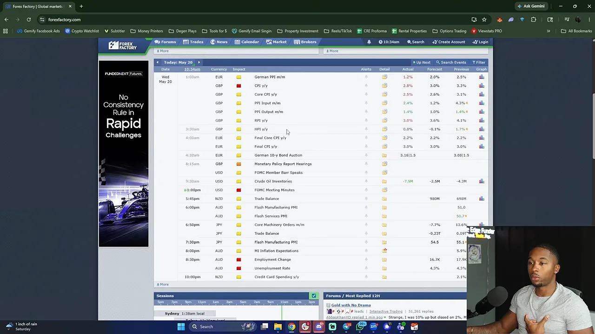
USD 빨간 폴더가 오후 1시에 있으면 12시 50분부터 1시 10분까지는 거래하지 않아요. 앞뒤 10분씩 여유를 두는 거예요. 발표 수치는 볼 필요 없다고 해요. 뉴스 자체를 노리는 매매는 무슨 일이 일어날지 모르니 도박이라고 봐요. 다만 전쟁이나 전염병처럼 일정에 없는 사건은 이 표에 나오지 않으니, 세상 돌아가는 소식은 따로 챙겨야 한다고 덧붙여요.
도구 두 가지: Tradovate와 TradingView
필요한 플랫폼은 두 개예요. 돈을 넣고 실제로 사고파는 브로커, 그리고 차트를 그리며 계획을 세우는 차트 플랫폼이에요. 강사는 브로커로 Tradovate, 차트로 TradingView를 써요. 브로커에도 차트가 있지만 보기 불편해서 계획은 TradingView에서 한다고 해요.
| 플랫폼 | 하는 일 | 강사가 짚는 점 |
|---|---|---|
| Tradovate (브로커) | 입금, 매수·매도, 수익 출금 | 기능이 적어 초보가 덜 헷갈려요. 미국 밖이라면 Interactive Brokers를 대안으로 들어요. |
| TradingView (차트) | 차트 분석, 계획, 알림, 연습 | 30일 무료 체험이 있고, 초보에게는 Essential 요금제면 충분해요. |
브로커 계좌는 은행 계좌처럼 주소, 직업 같은 개인 정보를 내고 심사를 받아요. 며칠 걸릴 수 있으니 지금 바로 신청해 두라고 해요.
Tradovate: 모의 계좌부터
Tradovate에 로그인하면 먼저 모드를 골라요. 왼쪽부터 실전(Live Trading), 과거 시장을 다시 돌려 보는 시장 재생(Market Replay), 가짜 돈으로 하는 모의 거래(Simulation)예요. 강사는 초보가 처음부터 실전 돈으로 하면 "99.999% 확률로 다 잃는다"며 오른쪽 모의 거래부터 하라고 해요.
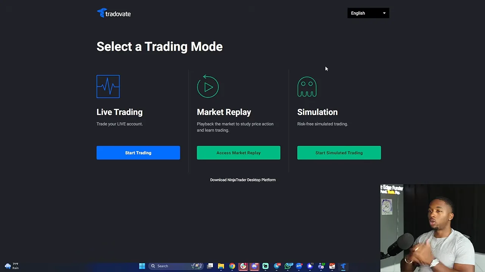
화면을 처음 열면 상자가 잔뜩 떠 있어요. 다 닫고, 모듈 추가에서 차트를 끌어다 놓은 뒤 NQ를 입력하면 돼요. 목록 맨 위가 가장 가까운 만기 계약이에요. 그다음 강사가 짚는 설정은 세 가지예요.
- 실시간 시세 구독. 결제하지 않으면 캔들이 15분 늦게 나와요. 설정의 구독 메뉴에서 CME(Chicago Mercantile Exchange) 번들을 고르면 모든 주요 선물 시세가 한 번에 들어와요. 레벨 1이면 충분하다고 해요.
- 손절·익절 기본값. 설정에서 TP(익절)와 SL(손절)을 각각 50틱으로 만들어 두면, 진입하자마자 빨간 선 두 개가 차트에 생겨요. 그 선을 계획한 자리로 끌어 옮겨요.
- 자동 맞춤 끄기. 차트 설정의 continuous auto fit을 끄면 차트를 끌어도 제자리로 튀지 않아요.
주문은 Buy Market(시장가 매수)과 Sell Market(시장가 매도)만 쓰면 된다고 해요. 숫자 칸으로 계약 수를 바꾸고, 손익 숫자가 괄호 안에 있으면 손실이라는 것도 알려 줘요.
TradingView: 차트, 알림, 리플레이
TradingView에서는 왼쪽 위에서 종목과 시간 단위(1분, 5분, 1시간 등)를 바꾸고, 차트 종류(캔들, 선, 하이킨아시 등)와 지표를 고르고, 왼쪽 세로줄에서 그리기 도구를 꺼내요. 강사가 가장 많이 쓰는 기능은 알림이에요. 차트 위 원하는 가격에 알림을 걸고, 알림 방식에서 "앱으로 알림"을 켜 두면 휴대폰으로 소식이 와요. 아래 화면 가운데 상자가 알림 만들기 창이에요.
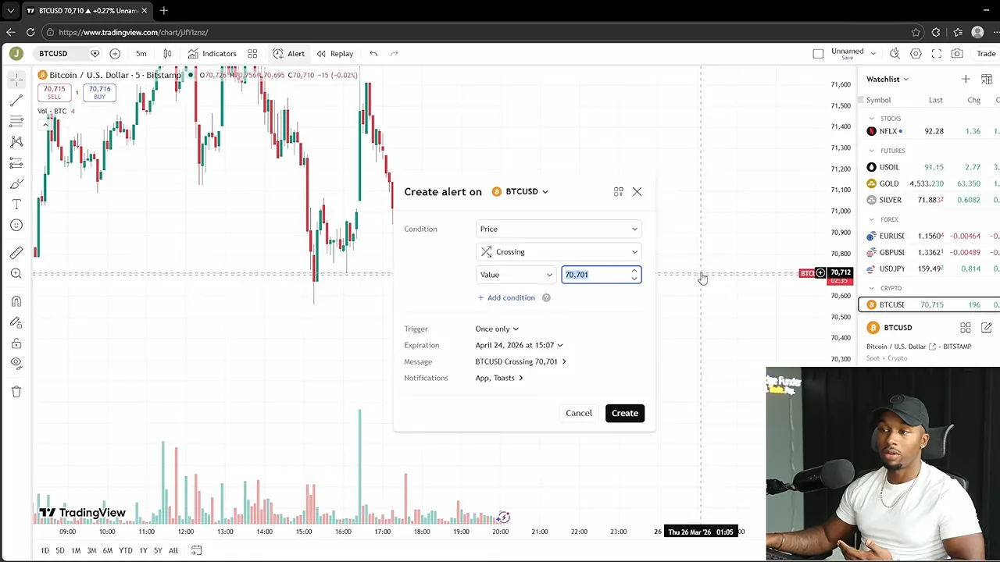
리플레이는 연습용이에요. 파란 세로선으로 과거 한 시점을 찍으면 그 뒤 캔들이 사라지고, 재생 버튼이나 한 칸 앞으로 버튼으로 캔들을 하나씩 다시 볼 수 있어요. 아래 화면 맨 아래에 재생 버튼, 1x 속도, 5m 간격 칸이 보여요. 이미 결과를 보고 "여기서 팔았을 거야"라고 하면 잘못된 자신감만 생긴다는 게 강사 설명이에요. 리플레이를 쓰려면 유료 요금제나 무료 체험이 필요해요.
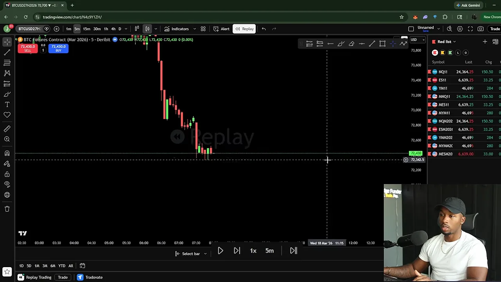
브로커를 연결하면 TradingView에서 바로 주문할 수 있어요. 강사도 대부분 이렇게 거래해요. 연습은 TradingView의 페이퍼 트레이딩(모의 계좌)으로 하면 돼요. 마지막 팁은 롱·숏 포지션 도구예요. 진입 자리를 찍으면 초록(익절)과 빨강(손절) 상자가 생기고, 가운데에 손익비가 표시돼요. 상자를 그리는 것만으로는 주문이 들어가지 않아요. 오른쪽 클릭으로 지정가 주문을 만들면 진입, 손절, 익절이 한 번에 채워져요.
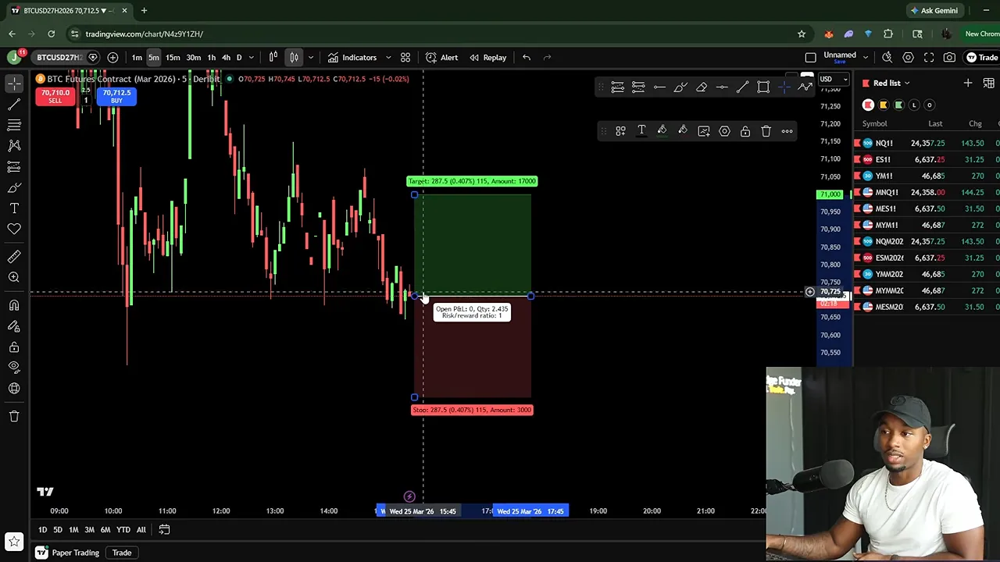
요금제는 처음엔 Essential이면 충분하다고 해요. 선물을 실시간으로 보려면 TradingView에서도 CME 그룹 실시간 시세를 따로 사야 해요. 화면 꾸미기(어두운 배경, 캔들 색, 격자 끄기)는 취향이라 템플릿으로 저장해 두면 된다고 해요.
차트 읽기: 캔들, 시장 국면, 지지·저항, 지표
강사는 캔들을 "누가 이겼는지 시장이 외치는 것"이라고 불러요. 선 차트는 기간마다 숫자 하나만 보여 주지만, 캔들스틱은 네 개를 보여 줘요. 그래서 한 캔들을 읽을 수 있으면 어떤 차트든 읽을 수 있다고 해요.
캔들 하나에 담긴 네 가격
아래 슬라이드의 왼쪽 초록 캔들(양봉)은 몸통 아래가 시가, 위가 종가예요. 오른쪽 빨간 캔들(음봉)은 반대로 몸통 위가 시가, 아래가 종가예요. 위아래로 삐져나온 가는 선이 꼬리이고, 꼬리 끝이 그 시간 동안의 고가와 저가예요. 5분 차트라면 캔들 하나가 5분 동안의 이야기예요.
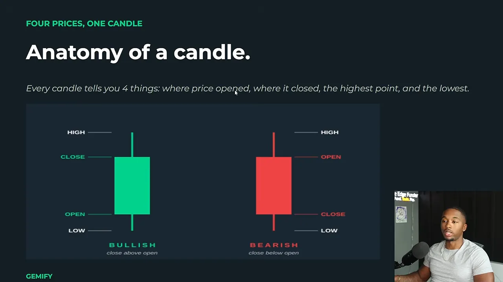
몸통 크기는 힘의 크기예요. 아래 슬라이드처럼 몸통이 크면 한쪽이 확실히 이긴 강한 움직임이에요. 작으면 어느 쪽도 크게 못 이긴 망설임이고, 거의 없으면 시가와 종가가 같은 도지예요.
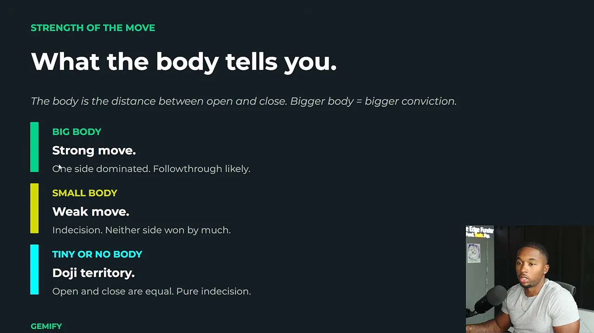
꼬리는 누가 밀려났는지를 알려 줘요. 왼쪽 칸처럼 아래꼬리가 길면 매도세가 값을 끌어내렸는데 매수세가 다시 밀어 올린 거예요. 하락 끝에서 나오면 매수 신호예요. 오른쪽 칸처럼 위꼬리가 길면 그 반대이고, 상승 끝에서 나오면 매도 신호예요.
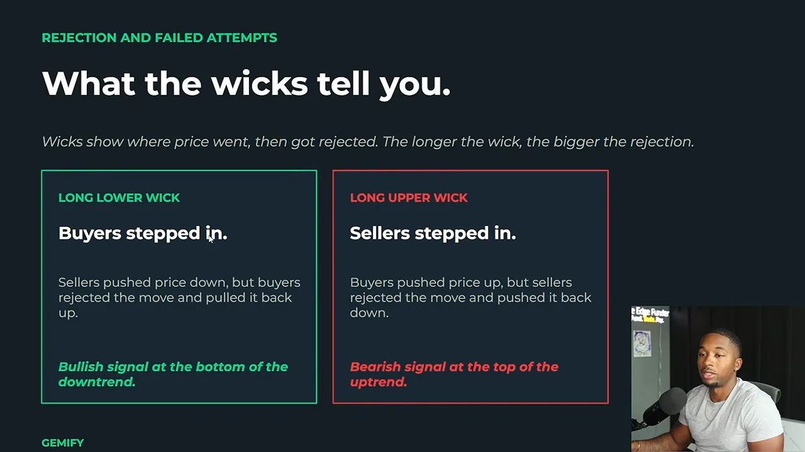
알아 둘 패턴 다섯 개
패턴은 사람이 같은 행동을 되풀이한 흔적이라서 통한다고 해요. 강사가 꼽는 다섯 개를 한 장에 모은 정리 화면이 아래예요. 위 줄은 왼쪽부터 망치형, 상승 장악형, 유성형이고, 아래 줄은 하락 장악형과 도지예요. 오른쪽 아래 칸에는 규칙이 적혀 있어요. 의미 있는 가격대에서 나온 패턴만 의미가 있고, 아무 데서나 나온 건 그냥 캔들이라는 거예요.
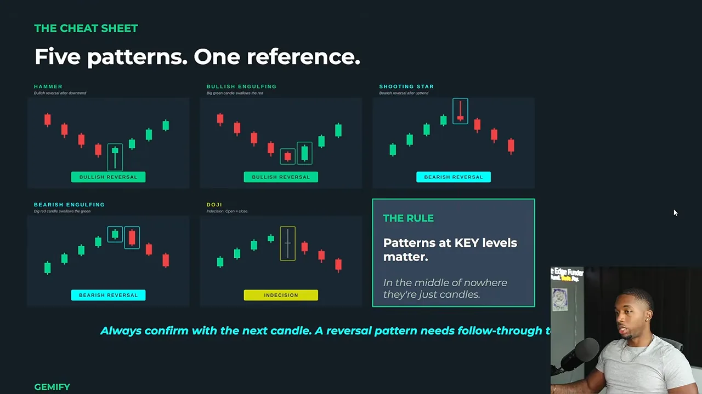
| 패턴 | 생김새 | 통할 때 | 안 통할 때 |
|---|---|---|---|
| 망치형 | 위쪽 작은 몸통, 긴 아래꼬리 | 하락 끝, 지지 근처 | 횡보 한가운데 |
| 유성형 | 아래쪽 작은 몸통, 긴 위꼬리 | 상승 끝, 저항 근처 | 횡보나 추세 한가운데 |
| 상승 장악형 | 큰 양봉이 앞의 음봉을 통째로 덮음 | 뚜렷한 하락 뒤 | 옆으로 흔들리는 장 |
| 하락 장악형 | 큰 음봉이 앞의 양봉을 덮음 | 뚜렷한 상승 뒤 | 옆으로 흔들리는 장 |
| 도지 | 몸통이 아주 작고 위아래 꼬리가 김 | 강한 추세 끝, 주요 가격대 | 좁은 횡보, 거래량 없을 때 |
강사는 도지를 가장 좋아한다고 해요. 실제 차트에는 교과서처럼 생긴 패턴이 드물다며, 15분·1시간 차트를 넘겨 가며 직접 찾아보라고 권해요.
시장은 세 가지만 해요
먼저 지금 시장이 어떤 상태인지 알아야 도구를 고를 수 있어요. 첫째는 추세예요. 아래 슬라이드처럼 고점과 저점이 계단처럼 함께 높아지면 상승 추세예요. 할 일은 되돌림 때 지지에서 사는 것이고, 하지 말 것은 상승 추세에서 꼭대기를 맞히려고 파는 거예요.
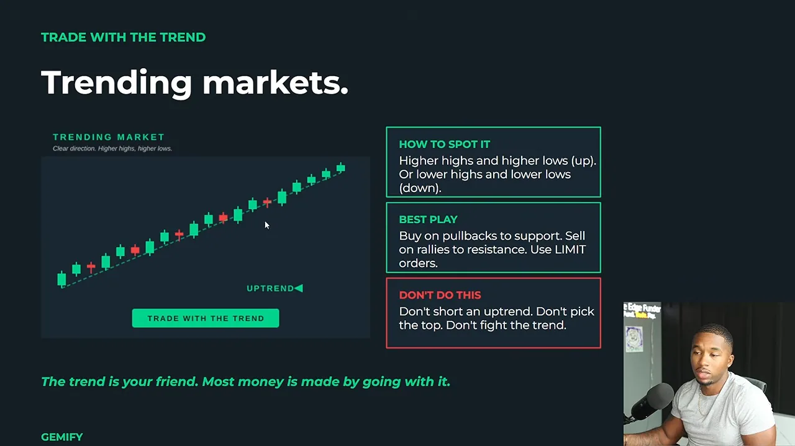
둘째는 횡보예요. 같은 고점과 저점을 오가며 옆으로 움직여요. 지지 근처에서 사고 저항 근처에서 팔되, 한가운데서 쫓아 들어가거나 아직 안 뚫린 돌파를 기대하지 말라고 해요.
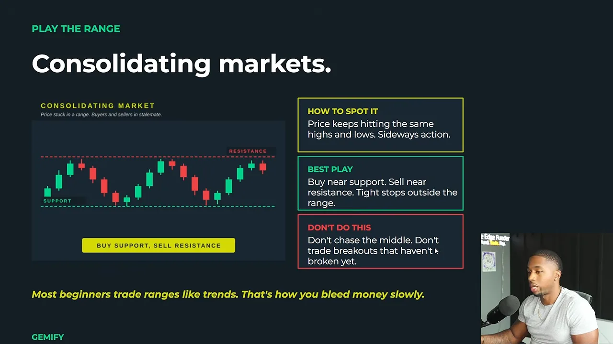
셋째는 돌파예요. 오래 막혀 있던 지지나 저항을 큰 캔들 하나가 뚫고 나가요. 그다음 새 추세가 시작돼요. 이미 많이 오른 뒤에 쫓아가지 말고 확인을 기다리라고 해요. 아래 슬라이드처럼 이 셋은 횡보, 돌파, 추세, 다시 횡보 순서로 계속 돌아요.
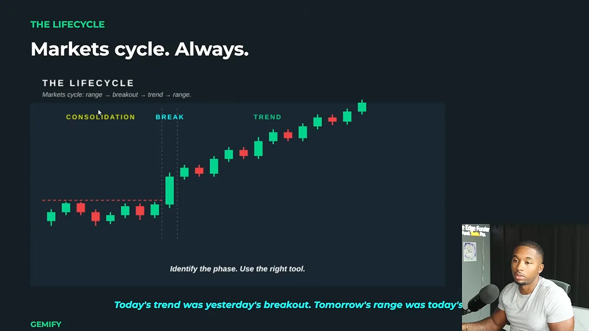
지지·저항: 거의 모든 전략의 바탕
지지·저항은 가격이 예전에 "너무 싸다"거나 "너무 비싸다"는 반응을 받고 돌아선 자리예요. 지지는 바닥, 저항은 천장이라고 생각하면 돼요. 강사는 이더리움으로 예를 들어요. 1,000달러가 오면 다들 싸다고 사서 오르고, 2,000달러가 오면 비싸다고 팔아서 내린다면, 그 두 가격대가 지지와 저항이에요. 아래 화면의 노란 선이 두 상자 사이를 오가는 가격이에요.
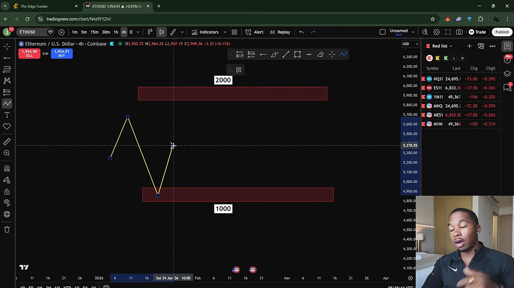
지지·저항이 늘 버티는 건 아니에요. 뚫리면 돌파가 되고, 뚫린 자리는 대개 다시 와서 시험받아요. 아래 화면처럼 2,000달러 저항을 뚫은 가격이 다시 내려와 그 자리를 지지로 쓰고 튀어 오르는 게 돌파 후 되돌림이에요. 강사가 가장 좋아하는 셋업 중 하나예요.
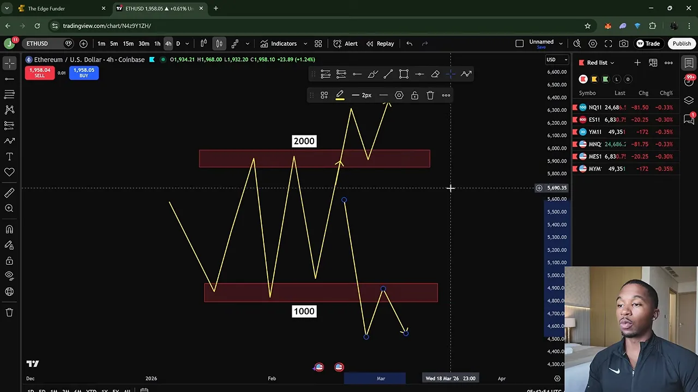
강사의 상자 그리는 규칙은 이래요. 가격이 크게 튕겨 나간 자리만 골라요. 저항이면 가장 높은 꼬리부터 가장 높은 몸통까지, 지지면 가장 낮은 꼬리부터 가장 낮은 몸통까지 상자를 그리고 오른쪽으로 길게 끌어요. 선 대신 상자를 쓰는 건 가격이 정확히 같은 자리에서 멈추는 일이 거의 없어서예요. 상자는 4시간이나 1시간 차트에 그려요. 시간 단위가 짧을수록 "가격이 거짓말을 많이 한다"는 이유예요. 처음엔 눈에 확 띄는 자리만 그리라고 해요. 강사도 초보 때 차트를 상자로 뒤덮었다가 아무것도 못 했다고 해요.
지표는 조수일 뿐이에요
강사는 지표를 배트맨 옆의 로빈에 비유해요. 도움은 되지만 혼자서는 악당을 못 이긴다는 거예요. 가장 많이 쓰는 건 EMA(Exponential Moving Average)예요. 최근 캔들 몇 개의 평균 가격을 이은 선이라, 캔들이 선 위에 있으면 매수만, 아래에 있으면 매도만 봐요. 아래 화면은 EMA 설정 창이고, Length 칸에서 몇 개 캔들의 평균을 낼지 정해요. 흔히 30, 50, 100을 써요.
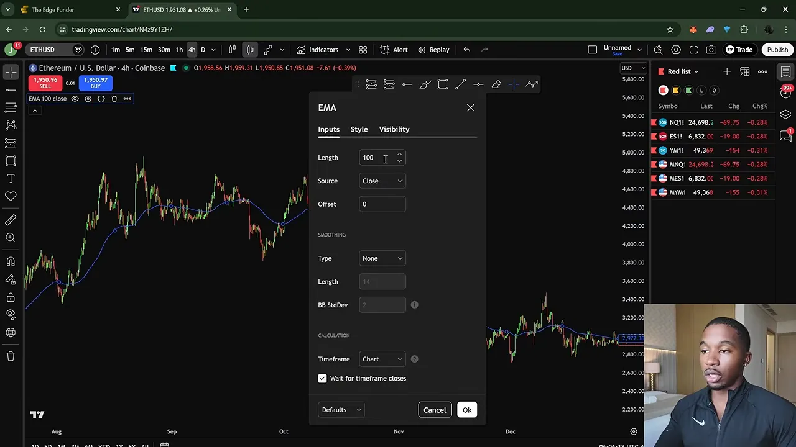
강사가 차트에 늘 켜 두는 건 Kill Zones 지표 하나예요. 세션이 시작되는 자리에 세로 띠를 그려 줘요. 아래 화면처럼 노란 띠와 흰 띠가 반복되는데, 강사 설정에서는 노란 띠가 런던, 흰 띠가 뉴욕 시작이에요. 처음 켜면 모양이 다르니 강사의 설정 화면을 따라 하라고 해요.
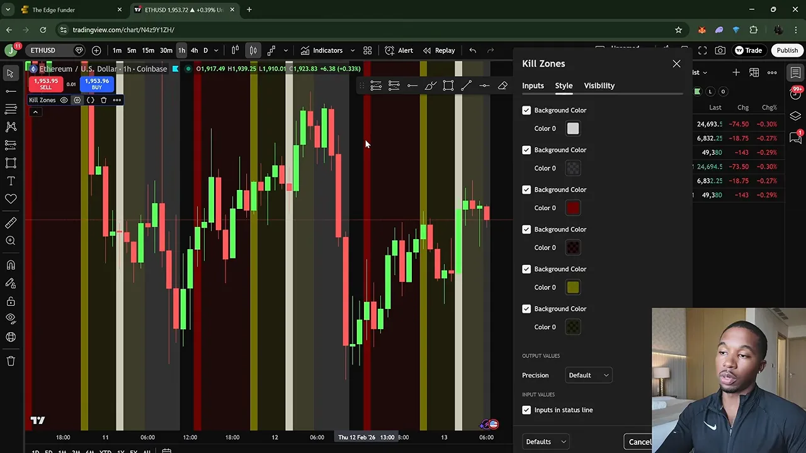
그 밖에 거래량, VWAP(가격이 위면 매수, 아래면 매도), RSI(Relative Strength Index)도 소개해요. RSI는 아래 화면처럼 차트 밑에 따로 그려지는 선이에요. 선이 아래 경계를 벗어나면 너무 많이 팔린 상태라 반등할 가능성이 있다고 봐요. 강사는 주식을 몇 달 들고 갈 때 RSI를 쓴다고 해요. 어떤 지표든 확실한 신호가 아니고, 지표를 300개씩 얹으면 오히려 헷갈린다는 게 결론이에요.
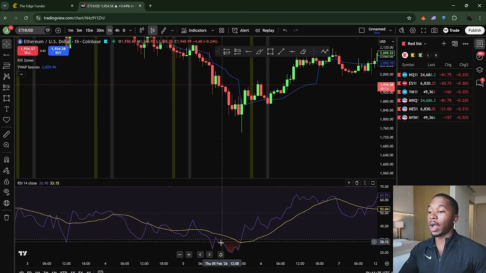
다섯 가지 전략
먼저 내 유형부터
전략을 고르기 전에 자기가 어떤 트레이더인지 정해요. 기준은 목표, 감당할 수 있는 위험, 그리고 하루에 차트를 볼 수 있는 시간이에요. 더 낫거나 못한 유형은 없다고 해요.
| 유형 | 보유 시간 | 어울리는 사람 | 스트레스 |
|---|---|---|---|
| 스캘퍼 | 몇 초~최대 10분 | 짧게 앉아 빨리 끝내고 싶은 사람 | 가장 커요 |
| 인트라데이 (데이 트레이더) | 30분~몇 시간, 길어야 하루 | 직장·학교가 있어 진입 후 떠나야 하는 사람 | 중간 |
| 스윙 | 며칠~몇 달 | 며칠에 한 번 확인하고 싶은 사람 | 가장 적어요 |
강사는 인트라데이예요. 초보 때 스캘핑을 하다 고생했다며, 처음엔 인트라데이로 시작하고 차트 읽기가 빨라진 뒤에 스캘핑을 생각하라고 권해요.
강사가 소개하는 전략은 다섯 개예요. 모두 "조건이 다 맞을 때만 들어간다"는 체크리스트 방식이고, 손절과 익절 자리가 미리 정해져 있어요.
| 전략 | 차트 | 진입 신호 | 익절 | 하루 기회 |
|---|---|---|---|---|
| 궁극의 지지·저항 | 4시간으로 구간, 1분으로 진입 | 구간에 닿은 뒤 직전 고점(저점) 돌파 | 앞선 고점·저점 | 1~2번 |
| 하이킨아시 스캘핑 | 1분 하이킨아시 + 100 EMA | 깨끗한 되돌림 뒤 큰 도지 마감 | 최소 1:1 | 1~2번(한 종목) |
| 런던 지지·저항 | 런던 세션 고점·저점 | 뉴욕 개장 뒤 그 구간에서 반응 | 앞선 고점·저점 | 1번 |
| 5분 NQ 런던 돌파 | 5분, NQ만 | 런던 상자 밖에서 몸통 마감 | 언제나 2:1 | 1번 |
| 스퀴즈 돌파 | 1시간으로 삼각형, 1분으로 진입 | 추세선과 직전 스윙 지점 동시 돌파 | 1시간 차트의 직전 스윙 | 셋업이 생길 때 |
1. 궁극의 지지·저항 전략
강사가 "가장 지루하지만 가장 많이 벌어 준다"는 주력 전략이에요. 4시간 차트에서 크게 튕겨 나간 자리에 상자를 그려요. 상자 위에 알림을 걸고 자리를 떠요. 상자 사이에서 가격이 뭘 하든 신경 쓰지 않아요. 아래 화면은 강사가 설명용으로 그린 그림이에요. 위 상자(1000)는 저항, 아래 상자(500)는 지지이고, 노란 선은 가격이에요. 행동하는 건 노란 선이 상자에 닿을 때뿐이에요.
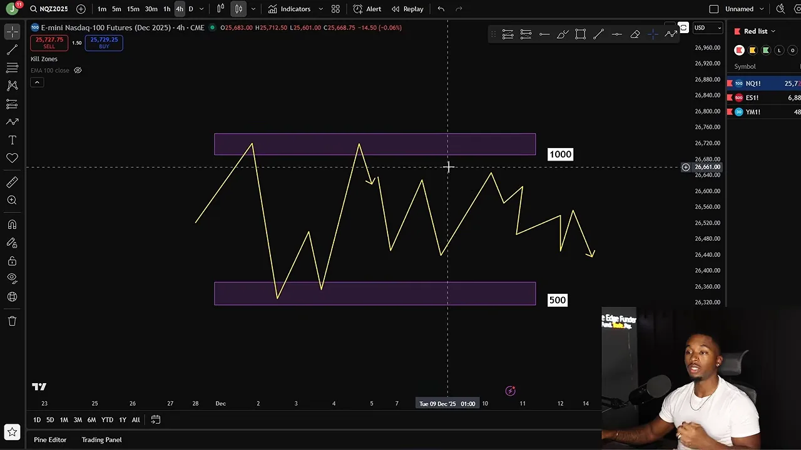
가격이 상자에 닿으면 1분 차트로 내려가요. 하락하며 상자로 들어온 가격은 고점과 저점을 계속 낮춰 왔을 거예요. 이 흐름이 바뀌는 순간을 기다려요. 상자에 닿은 뒤 가격이 가장 최근 고점을 위로 넘으면 바로 매수해요. 손절은 가장 최근 저점 아래, 익절은 앞선 고점 중 하나예요. 아래 그림은 영상의 설명을 한 장에 옮긴 거예요.
강사가 실제로 표시한 1분 차트가 아래예요. 노란 선이 고점(초록 가로선)을 계속 낮추며 아래 보라색 4시간 상자로 내려와요. 상자에 닿은 직후 가장 가까운 초록선을 넘는 자리가 진입점이에요.
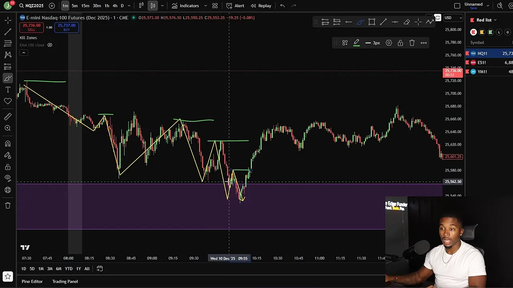
그 매매를 롱 포지션 도구로 그린 결과예요. 초록 상자 위 끝이 익절, 빨간 상자 아래 끝이 손절이고, 가운데 표시된 손익비는 2.6이에요. 손절 폭은 52.75포인트, 목표는 137포인트였어요.
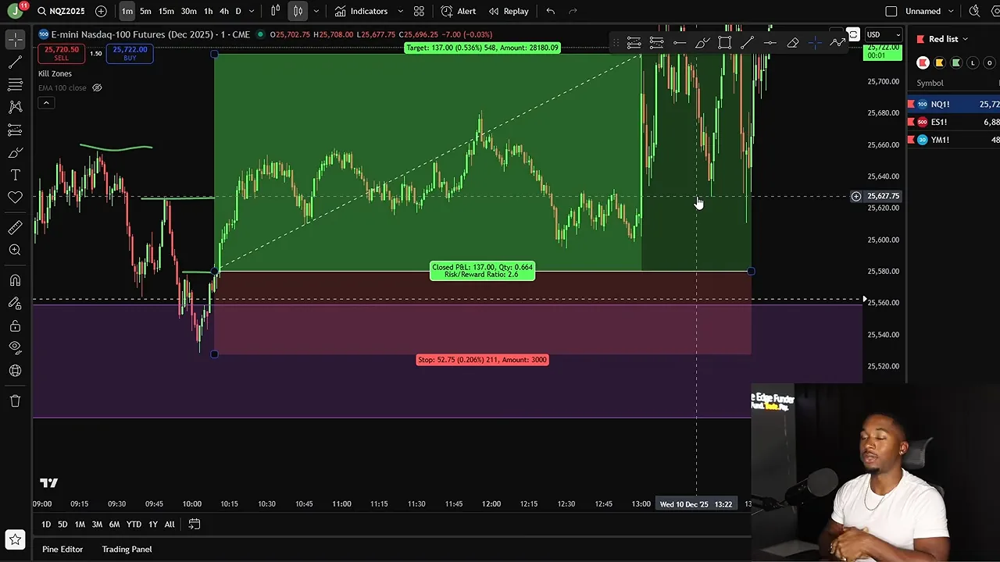
저항 쪽도 똑같아요. 저항 상자로 올라온 가격이 가장 최근 저점을 깨면 팔아요. 뚫린 지지가 저항으로 바뀐 돌파 후 되돌림 자리에서도 같은 진입 규칙을 써요. 강사는 YM 예시에서 이 방식으로 15분 만에 익절했다고 해요.
아래는 실전 매매예요. 1시간 차트로 그린 저항 구간(위쪽 초록 띠)에 가격이 개장 직전 다시 닿았어요. 개장 직후 흰 가로선(최근 저점)을 깨자 매도 역지정가 주문이 체결됐어요. 빨간 큰 캔들이 단계별 익절을 차례로 지나며 내려가요. 강사는 이 매매가 3분 만에 끝나 5,500달러를 벌었다고 말해요. 보통은 20~30분, 길면 한 시간 걸린다고 덧붙여요.
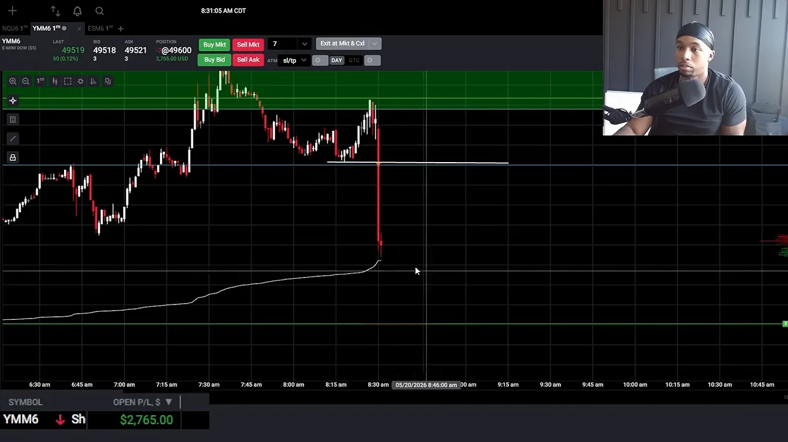
2. 하이킨아시 스캘핑 전략
초보에게 가장 실수하기 어렵다는 체크리스트 전략이에요. 대신 몇 초~몇 분 만에 끝나서 차트 앞에 앉아 있어야 해요. 아래가 화면에 띄운 여섯 단계 체크리스트예요.
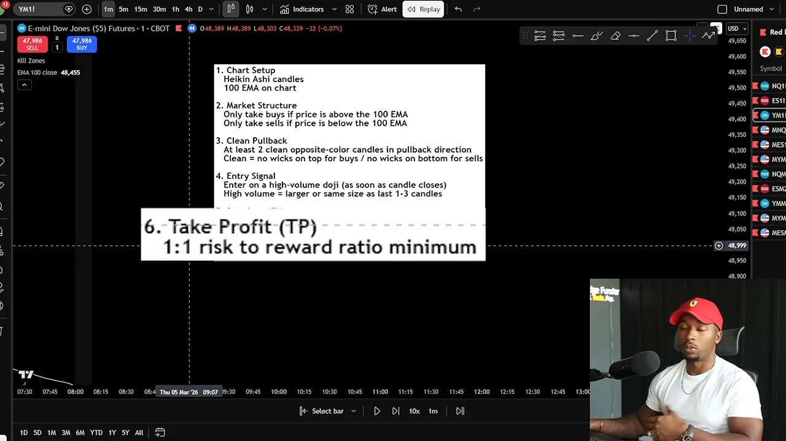
- 차트 설정 — 1분 차트를 하이킨아시 캔들로 바꾸고 100 EMA를 얹어요. 강사는 EMA 색만 흰색으로 바꿔요.
- 시장 구조 — 캔들이 EMA 위면 매수만, 아래면 매도만 봐요.
- 깨끗한 되돌림 — 추세 반대 색 캔들이 2개 이상 이어져야 해요. 매수를 노릴 때는 위꼬리 없는 캔들, 매도를 노릴 때는 아래꼬리 없는 캔들이 "깨끗한" 캔들이에요.
- 진입 — 앞 캔들 1~3개보다 크거나 같은 도지가 나와 마감하는 순간 들어가요.
- 손절 — 진입한 도지 너머에 둬요.
- 익절 — 최소 1:1이에요. 더 길게 잡으면 승률이 떨어진다고 해요.
하이킨아시 캔들은 일반 캔들과 두 가지가 달라요. 몸통이 앞 캔들 몸통의 가운데에서 시작하고, 끝나는 자리가 실제 종가가 아니라 그 캔들 동안의 평균 가격이에요. 그래서 추세 중에는 반대쪽 꼬리가 없는 캔들이 이어져 보여요.
아래 예시는 EMA 아래에서 나온 매도예요. 초록 되돌림 캔들이 3개 이어진 뒤 크기가 큰 도지가 나왔어요. 숏 포지션 도구로 도지 위에 손절, 1:1 자리에 익절을 두었고 2분 만에 이겼어요. 도지가 작을 때 들어갔다면 바로 손절이 났을 거라고 비교해 보여 줘요.
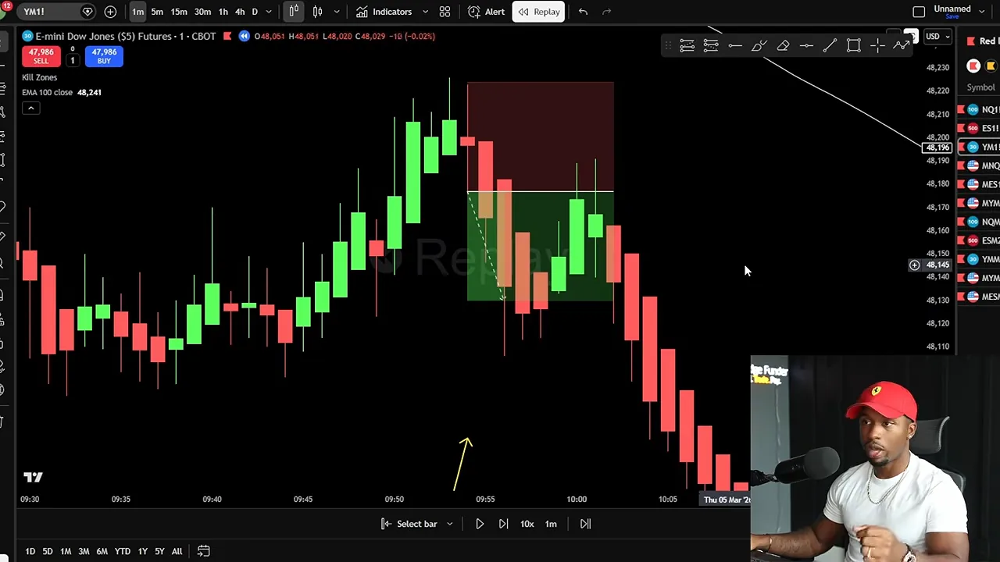
강사가 임의로 고른 한 달을 백테스트한 결과도 보여 줘요. 32번 매매에 24승 8패, 승률 75%였어요. 평균 손익비는 1.41이에요. 계획은 1:1인데 실제가 더 높은 건, 하이킨아시 몸통 끝을 진입가로 그렸지만 실제 체결가가 그보다 유리했기 때문이라고 해요. 2년 넘게 써 보니 평소 승률은 68% 안팎, 가장 높을 때 78%였다고 해요.
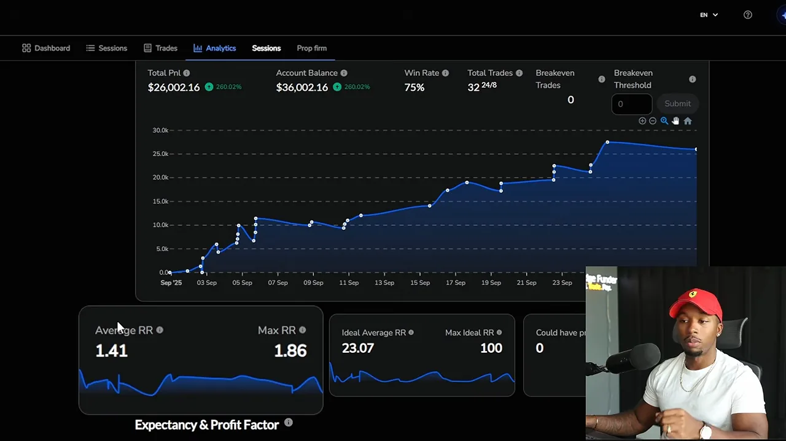
3. 런던 지지·저항 전략
지지·저항을 직접 찾기 어려운 사람을 위한 전략이에요. 런던 세션에 만들어진 고점과 저점을 그대로 그날의 지지·저항으로 써요. Kill Zones 지표가 세션 시작을 표시해 주니 고점과 저점만 상자로 감싸면 돼요. 아래 화면에서 아래쪽 흰 화살표가 런던 저점에 그린 상자를, 위쪽 화살표가 뉴욕 시간에 그 자리를 다시 시험하는 모습을 가리켜요.
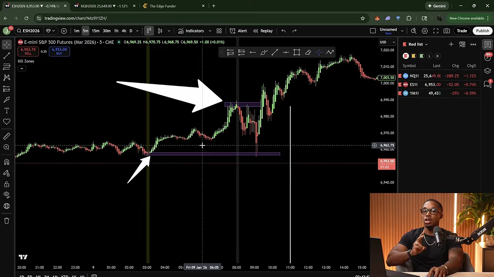
진입은 구간에 닿은 뒤 잠시 횡보하다 그 횡보를 벗어날 때, 또는 직전 고점(저점)을 넘을 때예요. 뚫린 구간이 되돌림을 받는 경우도 같은 방식으로 써요. 주식시장이 열린 뒤에 들어가는 게 중요하다고 해요. 큰 움직임은 개장이 만든다는 이유예요.
아래가 실전 매매예요. 초록 상자가 런던 저점 구간이에요. 가격이 아침 내내 그 위에서 오르내리다, 개장 캔들에서 직전 고점을 넘어 매수 역지정가 주문이 체결됐어요. 한 번 아래로 꼬리를 달아 손절 근처까지 왔지만, 손절을 최근 저점보다 3~4틱 아래에 두어서 살아남았어요. 2분 만에 약 8,000달러 익절이 났어요.
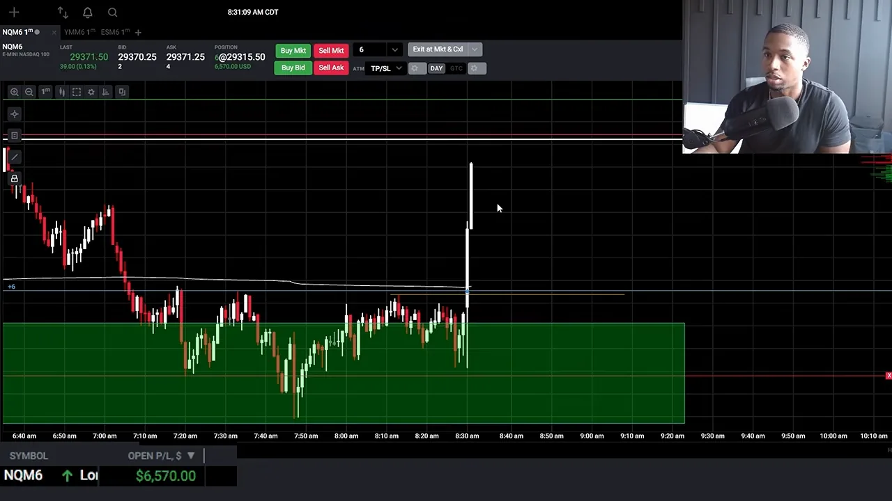
4. 5분 NQ 런던 돌파 전략
NQ 한 종목, 5분 차트 하나로만 하는 일곱 단계 전략이에요. 아래가 체크리스트 전체예요.
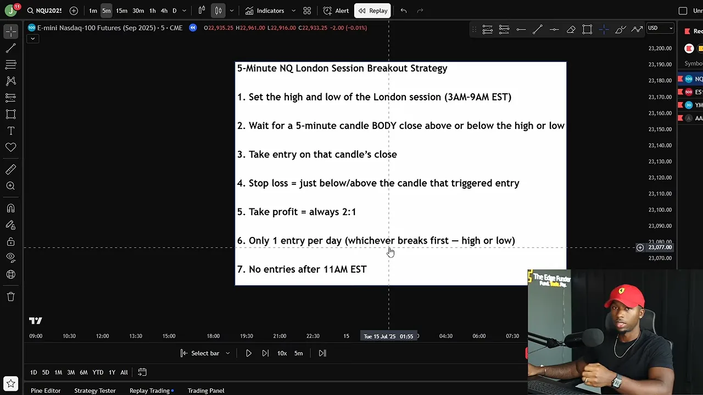
- 런던 세션 고점·저점 표시 — 런던 시간 캔들을 상자로 감싸거나 고점과 저점에 선을 그어요.
- 5분봉 몸통 마감 기다리기 — 꼬리만 삐져나온 건 안 쳐요. 몸통이 상자 밖에서 마감해야 해요.
- 그 캔들 마감에 진입
- 손절은 진입 캔들 너머 — 매수면 그 캔들 아래, 매도면 위예요.
- 익절은 언제나 2:1 — 한 번 이기면 두 번 진 만큼을 메워요.
- 하루 한 번만 — 먼저 깨진 쪽 하나만 하고, 지면 반대쪽 돌파는 하지 않아요.
- 오전 11시(동부) 이후 진입 금지 — 그 뒤엔 거래량이 줄어 돌파가 힘을 잃어요.
아래 예시는 2025년 7월 14일이에요. 파란 상자가 런던 시간의 고점과 저점이에요. 8시 20분 5분봉이 상자 위에서 마감해 매수했고, 손절은 그 캔들 아래, 익절은 2:1이에요. 8시 30분에 익절이 나며 190틱 넘게 잡았다고 해요.
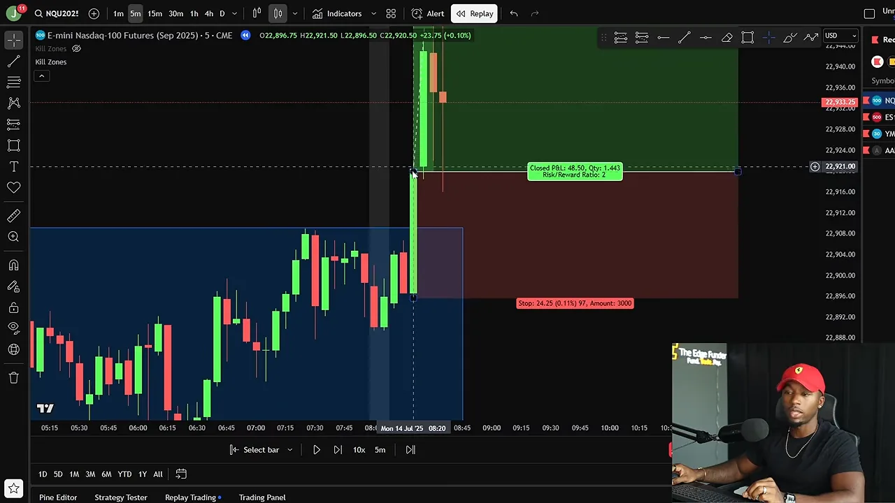
2025년 7월 한 달을 매일 이 규칙대로 했다면 어땠을지도 보여 줘요. 5계약씩 18번 매매해 8승 10패, 승률은 44%였지만 총손익은 1만 8,600달러였어요. 평균 손익비가 2.02라서 지는 날이 더 많아도 남는 거예요. 강사는 시작 잔고 2,500달러로 NQ 5계약을 열 수 있다고 말해요. 앞의 계약 표대로 NQ 증거금이 1계약 1,000달러라면 5계약에는 5,000달러가 필요하니, 영상 안에서도 숫자가 엇갈려요. 강사는 증거금이 브로커마다 다르다고만 덧붙여요. 과거 결과가 미래 수익을 보장하지 않는다는 말도 함께 해요.
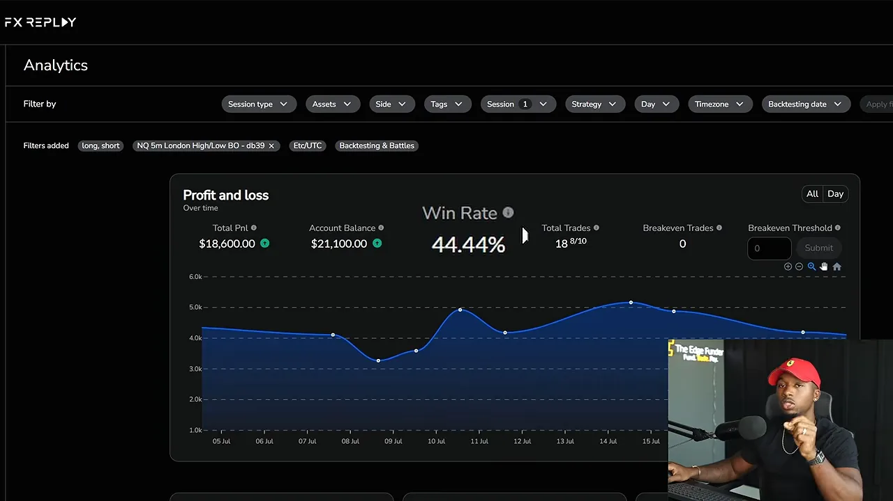
5. 스퀴즈 돌파 전략
강사가 2018~2019년부터 써 왔다는 전략이에요. 선물뿐 아니라 주식과 코인을 몇 달씩 들고 갈 때 진입 자리를 찾는 데도 쓴다고 해요. 아래가 여섯 단계 체크리스트예요. 1번 줄이 핵심이에요. 1시간 차트에서 고점은 낮아지고 저점은 높아지는, 즉 삼각형으로 좁혀지는 모양을 찾아요.
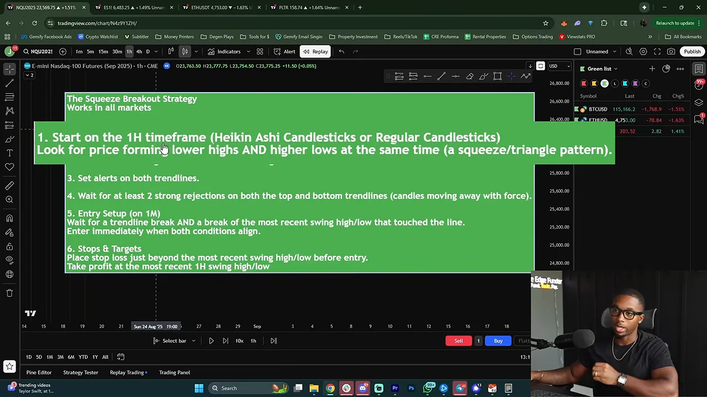
설명용 그림은 아래와 같아요. 위 추세선은 낮아지는 고점을, 아래 추세선은 높아지는 저점을 이어요. 가격이 삼각형 안으로 좁혀질수록 빠져나갈 때 힘이 세다고 해요. 위아래 선에 각각 두 번 이상 닿아야 유효한 스퀴즈로 쳐요. 선을 그린 뒤에는 추세선 위에 알림을 걸고 떠나요.
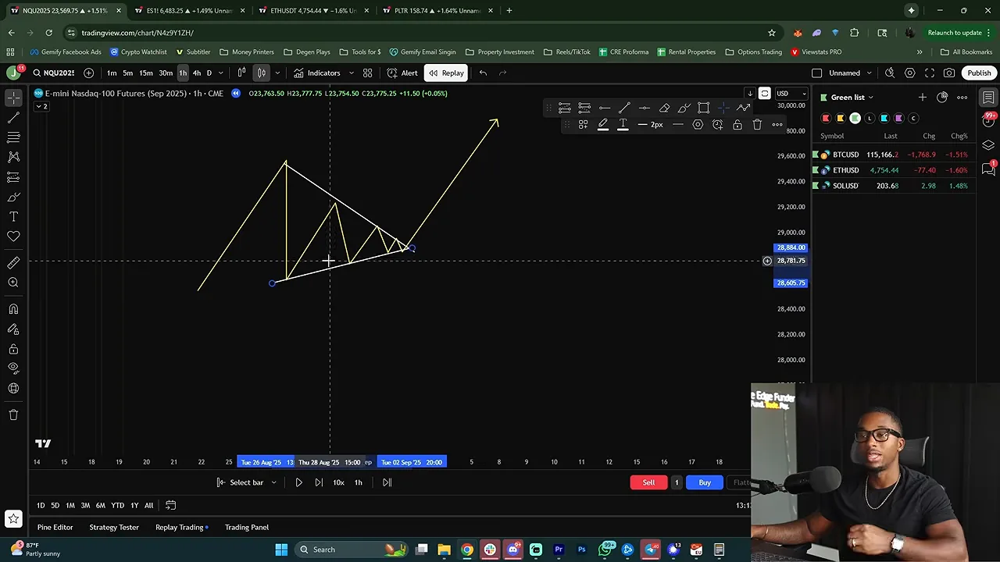
진입은 1분 차트로 해요. 조건은 두 개가 동시에 맞아야 해요. 추세선을 벗어나야 하고, 추세선에 마지막으로 닿았던 스윙 고점(매도라면 스윙 저점)도 넘어야 해요. 추세선만 넘고 스윙 지점을 못 넘으면 들어가지 않아요. 손절은 진입 직전 스윙 너머, 익절은 1시간 차트의 가장 가까운 스윙 지점이에요.
아래는 NQ에서 아래로 빠진 경우예요. 흰 가로선이 마지막 스윙 저점이고, 8시 31분에 그 선이 깨지며 매도했어요. 빨간 상자가 직전 스윙 고점 위의 손절, 초록 상자가 1시간 차트 스윙 저점의 익절이에요. 손익비는 3.27이고, 결국 익절에 닿았어요.
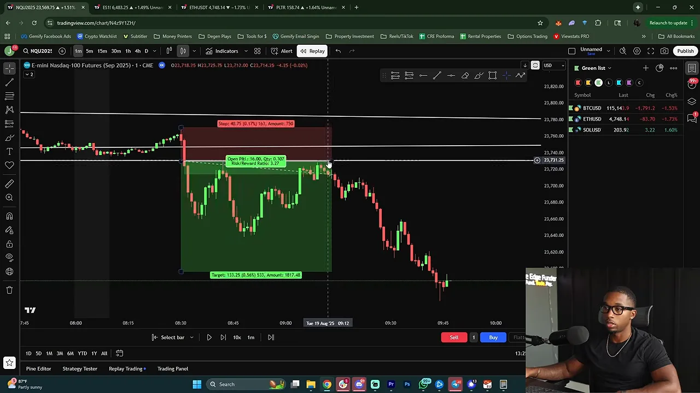
같은 규칙을 ES, 이더리움, 그리고 주식 팔란티어에서도 보여 줘요. 아래 팔란티어 1시간 차트에서도 위 추세선은 낮아지는 고점을, 아래 추세선은 높아지는 저점을 이어요. 오전 8시 큰 양봉이 위로 뚫자 매수했어요. 강사는 사상 최고가 근처라 목표를 넘겨 더 들고 갔다고 해요.
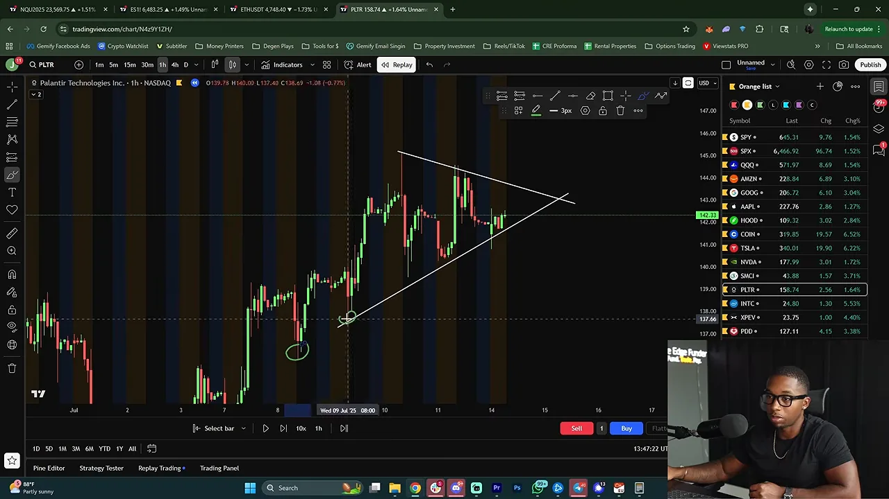
마지막은 YM 실전 매매예요. 아래 추세선에 네 번, 위 추세선에 두 번 닿은 스퀴즈를 위로 빠져나가는 자리에서 매수 역지정가 주문이 체결됐어요. 새 저점이 진입가 위에 생기자 손절을 본전으로 옮겼고, 2:1 익절로 5,355달러를 벌었어요. 강사는 평소엔 손절이나 익절을 거의 건드리지 않는다고 해요. 부분 청산을 하면 "다 들고 있었으면 더 벌었을 텐데" 하는 계산이 머릿속을 괴롭혀서라는 거예요.
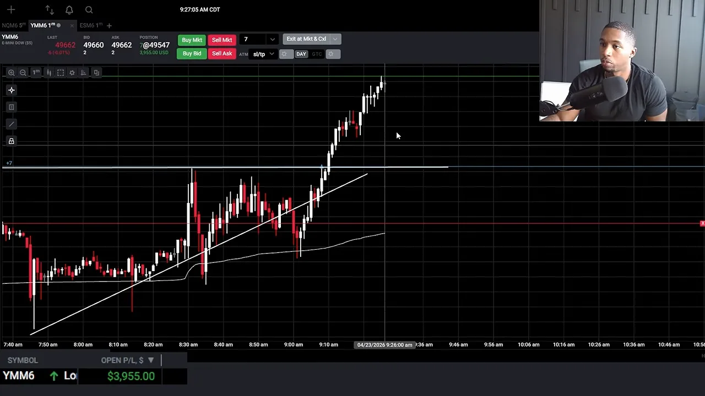
백테스트와 매매일지
어떤 전략이든 하루에 기회가 세 번이면 연습도 세 번뿐이에요. 강사는 그래서 백테스트를 해야 한다고 해요. 과거 차트로 한 시간 동안 20~50일 치를 연습할 수 있기 때문이에요. 경기 때만 공을 던지는 농구 선수가 매일 연습하는 선수를 이길 수 없다는 비유를 강의 내내 되풀이해요.
리플레이로 연습하는 법
TradingView의 리플레이 버튼을 누르고, 눈을 감은 채 아무 과거 시점이나 찍어요. 결과를 미리 보지 않으려는 거예요. 그다음 Kill Zones를 켜서 실제로 거래하는 시간대(강사는 뉴욕 세션)에만 연습해요. 1시간 차트에서 구간과 추세선을 그리고, 한 칸 앞으로 버튼으로 캔들을 하나씩 넘기며 진입 조건이 나오는지 봐요. 아래 화면 아래쪽에 리플레이 버튼들이 보이고, 차트 가운데 빨간 상자가 강사가 그린 지지 구간이에요.
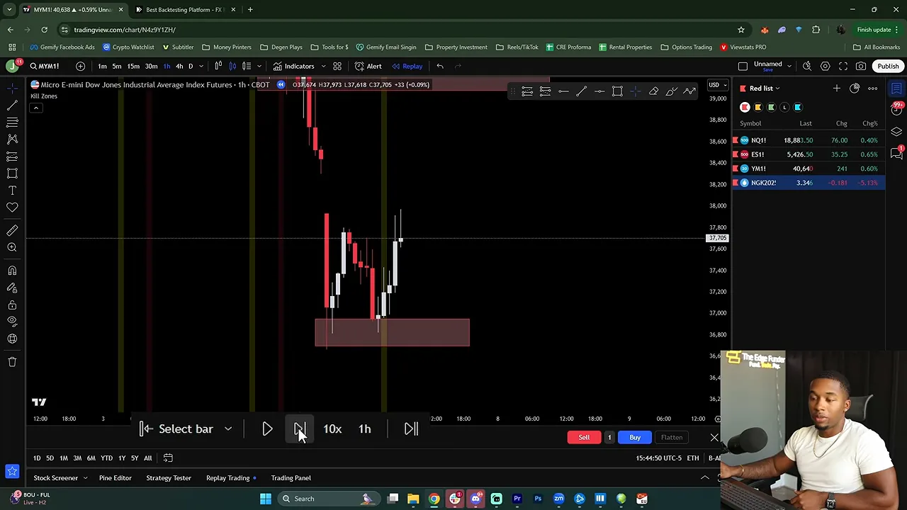
하이킨아시 차트에서는 리플레이가 막혀 있어요. 강사의 우회법은 이래요. 일반 캔들 차트에 "Heikin Ashi Candle Overlay" 지표(작성자 Bjorgum)를 얹어요. 그다음 차트 설정의 심볼 탭에서 원래 캔들의 몸통, 테두리, 꼬리를 꺼요. 겉보기엔 하이킨아시인데 TradingView는 일반 캔들로 알아서 리플레이가 돼요.
무엇을 기록하나요
강사가 띄운 "전략 시험하기" 슬라이드예요. 백테스트, 백테스트, 백테스트가 첫 줄이고, 그 아래가 기록할 것들이에요. 시작 날짜, 승패, 매매 없는 날을 적고, 매매마다 "완벽한 셋업", "거래량 적음", "뉴스 날" 같은 짧은 메모를 달아요. 최소 50일 치(50번이 아니라 50거래일)를 돌린 뒤 승률, 매매 없는 날 수, R 수익을 계산해요.
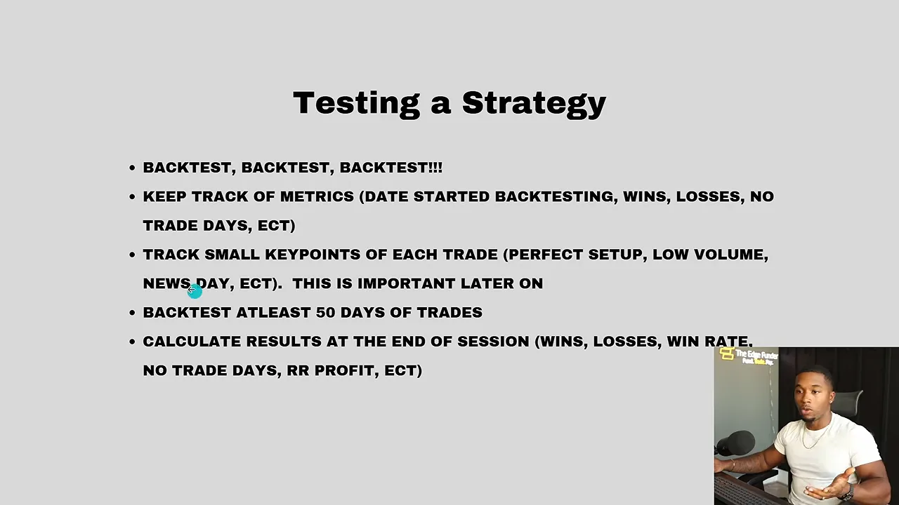
R은 매매 한 번에 거는 돈을 1로 놓고 세는 단위예요. 손절이 나면 언제나 −1R이고, 2:1로 이기면 +2R이에요. 강사가 든 예시를 그대로 그리면 아래와 같아요. 100번 매매에 절반을 2:1로 이기고 절반을 지면 +100R − 50R = +50R이에요. 매번 100달러를 걸었다면 5,000달러예요.
틱으로도 적어 두라고 해요. 강사는 차트 위에 예시로 "3월 24일 오후 1시, 패, −29틱, 거래량 적음"을 적어 보여요. 실제로는 차트가 아니라 메모장이나 스프레드시트에 모아야 나중에 한꺼번에 볼 수 있다고 해요.
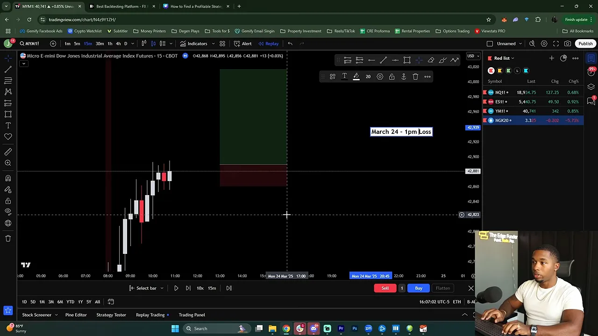
100번 매매 합계 0R
돈으로는 0달러
- "런던 돌파"를 눌러 보세요. 승률이 44%로 절반이 안 되는데도 합계가 플러스예요. 손익비 2:1이 지는 횟수를 메워 주기 때문이에요.
- "영상 예시"에서 손익비를 1로 내려 보세요. 승률 50%로는 본전이에요. 익절을 일찍 끊는 습관이 왜 위험한지 보여 줘요.
- 거는 돈만 바꿔 보세요. R 합계는 그대로이고 달러만 달라져요. 강사가 R로 기록하라는 이유예요.
이 계산기는 수수료와 미끄러짐을 넣지 않은 단순 계산이에요. 승률과 손익비가 앞으로도 그대로 유지된다는 가정 위에 서 있어요.
결과를 보고 고치기
50일 치가 모이면 메모와 차트를 다시 봐요. 아래 슬라이드는 무엇을 볼지 네 줄로 정리해요. 메모에서 패턴을 찾고, 차트에서 이긴 매매와 진 매매의 공통점을 찾아요. 이긴 쪽에서는 더 오래 들고 갈 수 있었는지, 추가 진입이나 손절 따라 올리기(트레일링)가 맞았는지 봐요. 진 쪽에서는 손절을 본전으로 옮기거나 일부를 미리 정리했으면 덜 잃었을지 봐요.
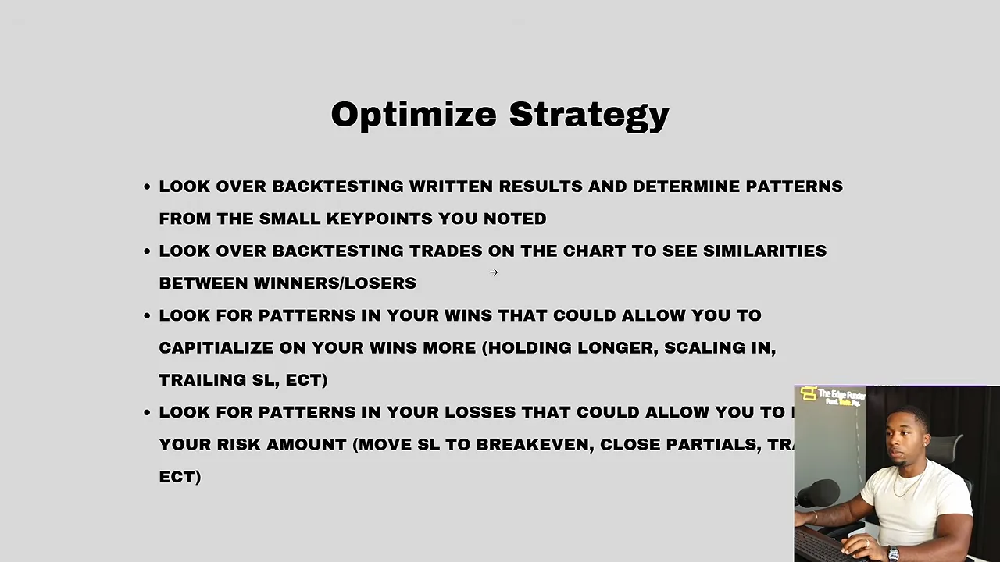
예를 들어 손실 100번 중 50번에 "늦은 시간, 거래량 적음" 메모가 있다면 늦은 시간엔 거래하지 않으면 돼요. 손절이 난 직후 바로 익절 자리까지 간 경우가 많다면 손절 폭을 조금 넓혀 볼 수 있어요. 손절을 본전으로 옮기기로 했다면 본전 청산도 따로 세어야 해요.
고친 버전은 다른 날짜를 섞어 최소 100일 치를 다시 돌려요. 승률, R 수익, 틱 합계를 예전과 비교해요. 결과가 좋으면 실전으로 가되 MNQ(Micro E-mini Nasdaq-100 futures), MES 같은 마이크로 1계약으로 한 달을 시험해요. 그다음에 원래 크기로 돌아가요. 결과가 나쁘면 1:1에서 2:1로 한 번에 뛰지 말고 1.5:1을 시도하는 식으로 다시 고쳐요.
매매일지
실전 매매도 같은 방식으로 기록해요. 강사가 꼽는 일지의 이점은 기록 확보, 패턴 분석, 감정 조절, 책임감, 위험 관리 점검이에요. 왜 들어갔는지 적어야 하니 이유 없는 매매가 줄고, 하루 손실도 한 달 전체에서 보면 작아 보여 침착해진다고 해요.
- 날짜와 시간, 종목, 방향(롱·숏), 계약 수
- 계획한 위험 금액과 기대 수익, 실제로 잃거나 번 금액
- 쓴 전략과 진입 이유(스윙 고점 돌파, 상승 장악형, 도지 등)
- 매매 중에 손절이나 익절을 바꿨다면 언제, 왜 바꿨는지
- 시장 상황(뉴스 날, 변동성 큼, 거래량 적음)
- 왜 이겼거나 졌다고 생각하는지
강사가 가장 중요하다고 꼽는 건 마지막 줄이에요. "너무 일찍 들어가서 졌다", "캔들이 마감하기 전에 들어가서 털렸다" 같은 이유가 쌓이면 고칠 점이 보여요. 강사는 천연가스를 목요일에 거래하면 승률이 반 넘게 떨어진다는 걸 일지로 알아내고, 그날은 천연가스를 끊었다고 해요. 일주일에 한 번, 장이 쉬는 주말에 일지를 다시 읽고 다음 주 규칙을 고치라고 해요. 자동으로 기록해 주는 일지 앱도 있지만, 진입 이유와 계획했던 위험은 직접 적어야 한다고 해요.
프랍펌과 트레이딩 플랜
프랍펌은 어떻게 돌아가나요
프랍펌은 트레이더에게 회사 돈을 맡기는 곳이에요. 보통 500~600달러쯤 되는 수수료를 내고 평가(챌린지)를 받아요. 정해진 수익 목표에 닿을 때까지 정해진 손실 한도를 넘지 않으면 통과예요. 통과하면 10만~15만 달러, 많게는 25만 달러짜리 계좌로 거래할 수 있어요. 수익은 회사마다 50~100%를 가져가요. 강사는 15만 달러 계좌에서 한 달 20%면 3만 달러인데, 내 주머니에서 나간 돈은 수수료뿐이라고 강조해요.
강사가 꼽는 이점은 아래 다섯 줄이에요. 자본을 주고, 회사 규칙 때문에 위험 관리를 할 수밖에 없고, 남의 돈으로 벌고, 내 돈을 걸지 않고, 계좌를 다시 시작(리셋)할 수 있다는 거예요. 10만 달러 계좌에서 3,000달러를 잃어도 그 돈을 갚는 게 아니라 계좌를 날리는 것뿐이에요. 다시 사거나 리셋 비용을 내면 돼요.
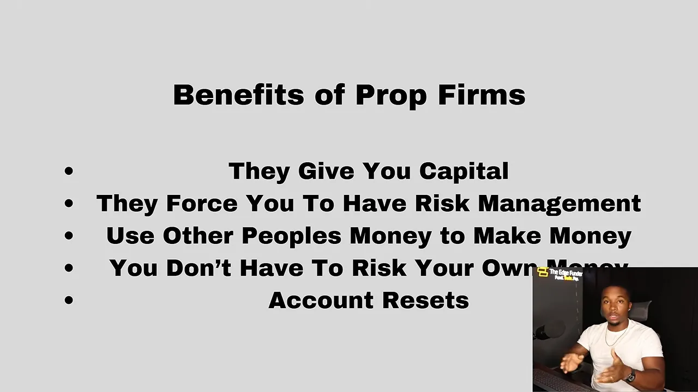
강사는 순서도 정해 줘요. 모의 계좌에서 시작해, 작은 실전 계좌로 꾸준함을 확인한 뒤에 프랍펌으로 가라고 해요. 프랍펌 계좌를 계속 날리고 다시 사는 걸 반복하면 돈만 계속 내게 된다는 경고예요.
프랍펌 계좌를 지키는 규칙
- 매일 거래하지 않아요. 큰 계좌를 보면 "3,000달러만 벌면 월세"라는 생각에 없는 셋업을 만들게 돼요. 체크리스트가 다 맞는 A+ 셋업만 하고, 손이 근질거리면 모의 계좌에서 풀어요.
- 위험은 한 번에 0.5~1%. 아래 슬라이드가 보수적인 기준이에요. 10만 달러 계좌라면 한 번에 500~1,000달러예요. 처음 몇 달은 500~750달러가 적당하다고 해요.
- 1.5~2%는 숙련자만. 경험 없이 2%씩 걸면 연패 한 번에 계좌가 날아가요.
- 리셋을 믿고 막 쓰지 않아요. 한 번에 크게 걸어 운을 바라는 매매는 대부분 계좌를 날린다고 해요. 펀디드 계좌를 내 돈처럼 다뤄요.
강사는 강의에 나온 세 전략(궁극의 지지·저항, 스퀴즈, 스캘핑)으로 모두 프랍펌을 통과해 봤다고 해요. 누군가의 도발에 스캘핑 전략으로 3~4일 만에 평가 다섯 개를 통과한 적도 있다고 말해요.
트레이딩 플랜 만들기
트레이딩은 나와 컴퓨터만 있는 일이라, 회사의 상사나 학교 선생님처럼 나를 붙잡아 줄 사람이 없어요. 강사는 트레이딩 플랜이 그 역할을 한다고 해요. 플랜이 있으면 위험이 정해지고, 매번 같은 방식으로 결정하고, 감정적인 결정이 줄어요. 아래 슬라이드가 플랜에 넣을 항목 전체예요.
| 항목 | 강사의 기준이나 예시 |
|---|---|
| 거래 시간 | "오전 8시~오후 1시"처럼 정해요. 시험해 보지 않은 시간에는 셋업이 와도 안 해요. |
| 거래 종목 | 최대 3개, 1~2개가 적당해요. 스무 명과 동시에 데이트하면 아무의 성격도 모른다는 비유를 들어요. |
| 쓸 전략 | 최대 2개예요. 다른 전략의 셋업이 완벽하게 나와도 하지 않아요. |
| 위험 한도 | 한 번 최대 손실(예: 300달러)과 하루 최대 손실(예: 1,000달러)을 정해요. |
| 하루 최대 매매 | 스캘퍼 4~5번, 인트라데이 3번, 스윙은 주 3번까지예요. |
| 뉴스 규칙 | 빨간 폴더 발표 앞뒤로 언제부터 쉴지 정해요. |
| 감정 규칙 | 너무 피곤하거나, 이별했거나, 화가 났으면 거래하지 않아요. |
| 청산 규칙 | 직전 고점·저점에서 나오는 식으로 정해요. 강사는 달러 금액 목표를 권하지 않아요. |
강사가 "이게 없으면 지난 몇 시간이 다 소용없다"고 하는 마지막 항목은 벌칙이에요. 아래 슬라이드처럼, 규칙을 어기면 스스로 벌을 받는 거예요.
강사는 1,000달러를 잃으면 정신 차릴 거라고 생각해도 실제로는 다음 날 또 같은 실수를 한다고 해요. 그래서 "가벼운 트라우마"가 남을 만한 벌칙을 정하라고 해요. 네 번째 매매 버튼 위에 손가락이 올라갔을 때 그 벌칙이 떠올라 손을 떼게 만드는 게 목표예요. 얼음 목욕, 4마일 달리기, 형제에게 돈 주기, 서양고추냉이를 넣은 역겨운 기름 마시기 같은 예를 들어요. 오후 2시 이후 금지인데 2시 1분에 들어갔다면 그것도 위반이에요. 위반한 즉시 해야 하고, 세 번 넘게 하게 된다면 벌칙이 너무 약한 거라고 해요.
심리, 연패, 계좌 키우기, 하루 루틴
심리 원칙 일곱 가지
강사는 이 부분을 강의에서 가장 중요하다고 해요. 본인도 처음엔 심리 강의를 건너뛰었고, 전략이 있어도 5년 동안 돈을 잃었다고 고백해요. 아래 슬라이드의 큰 글씨가 결론이에요. 트레이딩은 80%가 심리, 20%가 기술이고, 대부분은 20%에만 매달려서 실패한다는 거예요.
첫 번째 원칙은 감정이 아니라 전략을 따르라는 거예요. 체크리스트가 11개면 9개만 맞아도 건너뛰어요. "지금은 좋아 보여서" 조건을 빼거나, 매매 중에 손절을 옮기고 익절을 늘리고 계약을 늘리는 건 모두 금지예요. 수백 번 시험해서 만든 체크리스트이니, 데이터가 부족한 초보가 고치려 들면 99.9% 틀린다고 해요.
두 번째는 돈에서 떨어지라는 거예요. 목표가 700달러였는데 200달러에서 "운동화 한 켤레 값"이라며 끊거나, 계획 안의 300달러 손실에 겁먹고 나오는 게 대표적이에요. 강사의 요령은 손익 표시를 달러 대신 틱으로 바꾸는 거예요. Tradovate와 TradingView 모두 설정에서 바꿀 수 있어요.
세 번째는 수익 나는 트레이딩이 지루하다는 거예요. 서퍼는 95%를 파도를 기다리며 보내고 5%만 파도를 타요. 하루 10~15번 매매하며 신이 난다면 아마 도박을 하는 중이라고 해요. 오늘 꼭 벌어야 한다는 생각도 버리라고 해요. 시장은 내일도 열려요.
네 번째는 정해진 루틴이에요. 매일 같은 시간에 차트를 열고, 백테스트로 몸을 풀고, 차트를 새로 그리고, 방향을 정해요. 어떤 날은 오전 8시, 어떤 날은 저녁에 게임하다 차트를 연다면 결과도 들쭉날쭉할 수밖에 없다고 해요.
나머지 세 원칙은 이래요. 다섯째, 손실은 확률의 일부예요. 승률 80%라도 다음 10번 중 8번을 이긴다는 뜻이 아니라, 1,000번 중 800번쯤 이긴다는 뜻이에요. 그만큼 오래 살아남는 게 내 일이에요. 여섯째, 백테스트는 선택이 아니라 필수예요. 초보는 매일 최소 30분, 이상적으로는 1~2시간을 권해요. 일곱째, 같은 길을 가는 사람들 곁에 있으라는 거예요. 혼자 하면 손실도 승리도 혼자 견뎌야 해서 외롭다고 해요.
연패가 왔을 때
강사는 연패가 반드시 온다고 못 박아요. 아래 슬라이드의 동전 비유가 그 이유예요. 앞면 확률이 50%여도 10번 던지면 9번 앞면이 나올 수 있어요. 확률은 바뀌지 않았고 연속이 나왔을 뿐이에요. 50:50은 수천 번 던져야 드러나요.
연패 때 하는 일은 다섯 가지예요. 계약 수를 줄여요(3계약이면 1계약으로). 전략을 바꾸지 않아요. 자리를 떠서 복수 매매를 막아요. 백테스트로 자신감을 되찾아요. 다음 날 같은 계획으로 돌아와요. 계약을 늘려 만회하려는 건 반대로 하는 거라고 해요. 아래 슬라이드는 강사가 연패 때 하는 "100번 리셋"이에요.
전략을 갈아타지 말라는 말은 39년 산 배우자 비유로 해요. 변기 시트 때문에 한 번 싸웠다고 결혼을 버리지 않는 것처럼, 나쁜 한 주 때문에 공들인 전략을 버리지 말라는 거예요. 다만 규칙을 어겨서 진 거라면 다른 문제라고 덧붙여요. 일지로 내가 같은 방식으로 거래했는지 먼저 확인하라고 해요.
계좌 키우기: 출금은 반씩
강사는 100달러로 100만 달러를 만들었다는 SNS(Social Networking Service) 이야기는 대부분 가짜라고 해요. 흔한 함정은 출금액을 전부 쓰거나, 전부 새 계좌에 넣거나, 잘될 때 위험을 키우다 날리는 거예요. 강사의 규칙은 아래 슬라이드처럼 출금할 때마다 반씩 나누는 거예요. 절반은 생활비와 저축으로 나에게 주고, 절반은 프랍펌 계좌를 더 사는 데 써요.
강사의 예시를 그대로 따라가면 이래요. 1달째에는 5만 달러 계좌 하나에서 5,000달러가 나와요. 2,500달러를 갖고 2,500달러로 계좌 여섯 개를 더 사서 일곱 개가 돼요.
2달째에는 일곱 계좌가 함께 1만 5,000달러를 벌어요. 7,500달러를 갖고 7,500달러로 계좌 18개를 더 사서 25개가 돼요. 3달째에는 25개 계좌가 4만 달러를 벌어 2만 달러를 가져가요. 아래 그림이 이 숫자를 한 번에 보여 줘요.
계좌를 여러 개 연결하면 한 계좌에서 낸 주문이 다른 계좌에도 똑같이 들어가요. 그래서 한 번의 매매가 25배가 돼요. 프랍펌마다 한 사람이 가질 수 있는 계좌 수에 한도가 있어서, 강사는 여러 회사에 나눠 둔다고 해요. 25개쯤에서 멈추고 남는 돈은 실전 계좌, 부동산, 사업에 넣으라고 권해요. 강사 본인은 3~4년째 트레이딩 수익을 상업용 부동산에 넣고 있다고 해요. 그리고 5만 달러 계좌에서 5,000달러면 한 달 10%이니 무리할 필요 없다고 해요.
초보가 하는 실수 여덟 가지
강사는 이 여덟 개만 피해도 90%보다 앞선다고 말해요. 아래가 정리 화면이에요.
| 실수 | 강사가 권하는 해결 |
|---|---|
| 전략 갈아타기 | 한 전략을 최소 100번 매매한 뒤에 판단해요. 시장 상황에 맞게 체크리스트 한 줄을 더하는 정도로만 조정해요. |
| 과도한 레버리지 | 한 번 손실이 잊힐 만큼 작게 걸어요. 1,000달러 계좌로 5,000달러를 벌려 하지 않아요. |
| 매매 계획 없음 | 진입, 손절, 목표, 중간에 나와도 되는 지점을 들어가기 전에 정해요. |
| 차트 지켜보기 | 쳐다봐도 결과는 안 바뀌어요. 알림을 걸고 떠나요. |
| 일지 안 쓰기 | 매매마다 캡처와 메모를 남기고 매주 다시 봐요. |
| 계획 없는 뉴스 매매 | 뉴스는 건너뛰는 게 좋고, 한다면 손절과 대응 계획을 먼저 정해요. |
| 이긴 뒤 위험 키우기 | 위험은 매번 같게 둬요. 키우더라도 1,000달러에서 1,200~1,300달러처럼 조금씩만 올려요. |
| 진 뒤 복수 매매 | 손실 뒤에는 최소 15분, 강사의 학생들은 30분 타이머를 걸고 쉬어요. |
복수 매매에는 실제 이야기가 따라와요. 한 학생이 여행 중 와이파이 문제로 계획보다 큰 손실을 봤어요. 그걸 바로 만회하려다 한두 시간 만에 8만 달러 실전 계좌를 다 날렸다고 해요(강사는 금액이 기억에 기댄 대략적인 숫자라고 말해요).
강사의 하루 루틴
강사의 아침은 새벽 5시 30분 기도, 성경 읽기, 명상으로 시작해요. 6시 20분부터 7시 40분까지는 운동이에요. 매일 운동하는 꾸준함이 트레이딩의 꾸준함으로 이어진다고 해요. 오전 7시 45분(미국 중부 시간)에 15분간 백테스트로 몸을 풀어요. 경기 전에 몸을 푸는 선수처럼요. 8시부터 차트를 봐요.
차트에서는 먼저 큰 흐름을 봐요. 아래 YM 예시에서는 며칠째 하락 중이라 매도 쪽으로 기울지만, 이틀 전 대통령의 게시물 하나로 생긴 큰 양봉 때문에 매수도 열어 둬요. 강사는 가격이 무엇을 했는지보다 왜 그랬는지를 보라고 해요. 그다음 4시간·1시간 차트에 구간을 그리고 시나리오를 세 개 세워요. 첫째, 위 저항에서 매도 신호가 나오면 판다. 둘째, 저항을 뚫고 되돌림이 오면 산다. 셋째, 신호 없이 아래로 내려가면 아래 지지에서 산다. 각 구간에 알림을 걸고 자리를 떠요.
그날 실제로는 개장(중부 시간 8시 30분) 직후 위쪽 저항 구간에서 횡보하다 가장 최근 저점을 깼어요. 강사는 거기서 팔았고, 손절은 직전 스윙 고점 위, 익절은 약 2.5:1 자리였어요. 진입 직후 손절과 익절에도 알림을 걸고 떠났고, 약 10분 만에 익절해 2만 달러쯤 벌었다고 해요. 그리고 일지를 적어요. 아래 슬라이드가 매매마다 적는 다섯 가지예요.
9단계 일일 체크리스트
강사가 개인 코칭 학생들에게 준다는 체크리스트로 강의를 정리해요. 강사는 예전에 트레이딩 플랜을 포스트잇에 적어 모니터에 붙여 두고 매일 아침 읽었다고 해요.
마지막 항목인 심리 파악은 내 약점을 아는 거예요. 복수 매매를 하는 사람인지, 과하게 거는 사람인지, 전략을 자주 바꾸는 사람인지 알면 그에 맞는 장치를 둘 수 있어요. 예를 들어 전략을 자주 바꾸는 사람이라면 새 전략 영상을 아예 보지 않는 식이에요.